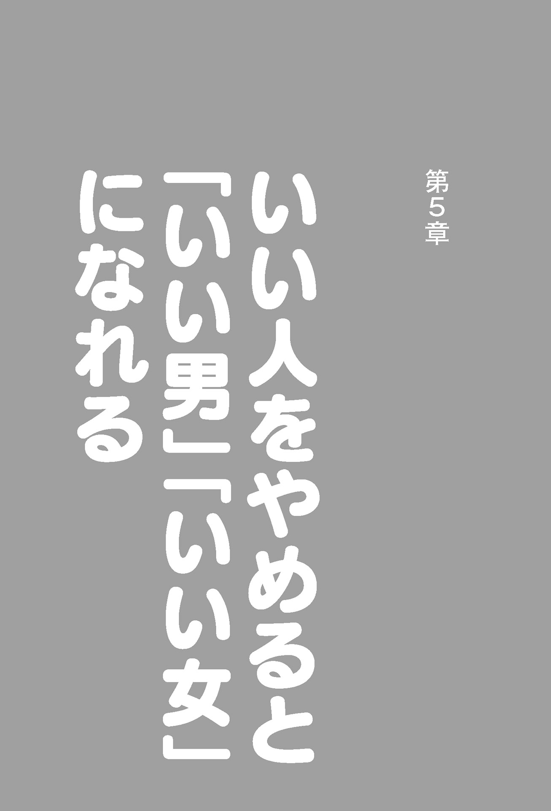

| 「いい人」「まじめな人」をやめるといいことがたくさん起きる！一生をラクに生きよう | |
| 本尾読 | |
| アイバス出版 (2017) | |
まえがき
私は基本的には「いい人」が好きです。
ですが、長くつき合い、何度も会っていると、疲れを感じることがあります。
「もういいよ、もっとラクにしたら」といいたくなります。
それに比べて、自分自身は中学生のころから「生意気な奴」といわれ始めました。あるいは大学生のころから「自分勝手な人間」ともいわれました。
小学生高学年のころは、何かで「怒らないこと」「自分の思ったことを正直に出さないこと」をよしとする教えを読み、そうしていたところがあります。
祖父が私のことを「小さいのに大した人間だ」と褒めていることを知り、それはそれでうれしかったことを覚えています。
私が変わり始めたのは、６年生のときに「伊能忠敬」と「北里柴三郎」の伝記を、親戚のお兄さんからもらって読んだころからです。
伝記にありがちな、小さいころはとてもできずに、苦労しつつ、勉強、努力して大成したという内容もあったのでしょうが、私がハッと思ったのは、「この２人は自分の好きなように生きて、それを生涯楽しんで、だから努力もちっとも苦じゃなかったんだ」ということでした。
２人それぞれに与えられた環境の中で、精一杯のことを尽しながらも、自分の夢や思いを忘れずに、人生を楽しむことを第一に掲げ生き抜いたのです。
２人は偉人中の偉人ですが、今生きているとしたら同時代の人には批判も多かったと思います。
伊能忠敬は50 歳をすぎてから隠居し、夢だった天文学を学び、そして日本中を歩き回り、初めての正確な日本地図をつくりました（今でも見事なものです）。
北里柴三郎は、今生きていたらノーベル医学賞は確実だといわれるほどの大医学者でかつ北里大医学部、慶應大医学部の創設者として尽力しています。
２人は、それぞれの道を究めようと妥協のない素晴らしい人生を歩き、また異性との交遊も十分楽しんだ生涯でした。
私が高校、大学と進み、そして社会に出て仕事をする中で、いつもニコニコして、一見優しそうなのに、「ズケズケと物をいう生意気な奴」「自分を曲げないガンコな奴」といつもいわれてきました。
それで、大変な苦労も（と自分ではいっているが、自分で招いたものばかり）してきたと思いますが、十分楽しい人生を送ってこれています。
私の目標は、伊能忠敬と北里柴三郎のような大偉人とはなれないにしても、せめて何か自分の好きな道で、世の中に貢献もしたいというものです（もちろん、自分の人生を楽しむというその範囲の中でだが）。
本書でも、「いい人」をやめた「チョイ悪」「少し不良」でもいいんだよ、それが一番人間らしいすてきな人生を送ることにつながるということを伝えていけたらなと考えています。
本尾 読
第１章
第２章
第３章
第４章
第５章
第６章
１
この人生は二度とない
人生で、これだけはとわかっていることが１つだけあります。
それは、人は必ず死ぬということです。
「オギャー」と生まれてきて、毎日食べて、育てられて、いろいろ学んでいきますが、それでも毎日確実に死に向かっていくのです。
10 代のころは、人の死というものを考え悩みますが、それは一時のことです。すぐに日々の雑事、学校の勉強や友だちづき合いの中で忘れます。
そして20 代、30 代と活発に動き、自分が死ぬことをどこか忘れるところがあります。
40 代、50 代と仕事で結果を出すときでしょうが、親の世代の死とも接することで、老後の自分のことも考え出します。
60 代に入ると、ぼちぼち体を壊した同世代の友人の中から死ぬ人も出てきて、健康や死についていろいろ考えるでしょう。
いわゆる高度成長期までは、本のベストセラーは、自己啓発のものや語学書が多かったのですが、高齢化社会への突入にともなって、多くの健康に関する本が売れる時代となりました。
自己啓発書は、これまでのようにはたくさん読まれなくなったようです。
もちろん、パソコン、スマホなどによる情報の拡まりも読書離れには影響していますが、体や健康に関する本というのは、その中でも、極立って売れるものとなっています。
ある法律の本をたくさん出版していた出版社が、今では健康に関するノウハウ本をたくさん出し、ベストセラーを連発しています。
健康や病気に気をつかうということはとてもいいことです。
パソコン、スマホの発達にあわせて医学も進歩し、また一般の人たちのよかったという経験で、有益な情報を手に入れられ、私たちもますます元気で長生きできるようになりました。
こうしてみると、日本の今の状況は、人類のとても素晴らしい先取り実験をしているようなところがあります。
人の幸せとは何か。この短い人生を、できるだけ健康に、楽しく、長生きしていこうとする。
もともと日本では、「家のために生きる」、「国のために生きる」ということを教えられてきました。
その集大成の１つが「武士道」の精神でしょう。
しかし、現代では民主主義の思想、自由主義の思想が浸透してきました。
昔からの教えとこうした新しい考え方が時にはぶつかり合いながらも、ちょうどいい具合になっているのが現代の日本だと思います。
倫理、道徳がなければ世の中はうまくいきません。かといってこれがガチガチでも個人の生き方は無視されます。
今の日本はちょうどいいところにあります。
世界一、倫理、道徳の浸透している社会であって、１人ひとりの生き方も尊重されています。
だから、私たちに求められているのは、自分の生を楽しもうということです。
それができる最高の時代にいるのに、人任せに生き、逆に他人に支配され、自由に生きていない人もまだ多くいるようです。
このように、今の時代は自由ですが、放っておいてもその自由は享受できません。
その人の意思、生き方、動き方次第です。
ちょっとした考え方と生き方のコツを自分のものにしていくことで、ラクにスイスイと、しかも楽しい一生を送ることができるはずです。
その方法をこの本では紹介したいと思います。
一度しかない大切なあなたの人生です。
楽しく、ラクにスイスイとした気分で、充実したものにしていきたいものです。
２
誰のために生きるのか
せっかく生まれてきたのに、苦しみだけの人生を送る人もいます。
時代というものもあるでしょう。
たとえば、戦国時代の動乱の時代、幕末や日露戦争や太平洋戦争（大東亜戦争）のように自分の国が存亡するかどうかのときもあります。
こんな大変なときに、人の命、人の生き方はほとんど無視されたかのようです。
しかし昔からの古典の『論語』、『老子』や『菜根譚』においても、その中で、わが生をラクに、楽しく送るための知恵を模索して、提供してくれています。
今の時代は、ラクなようですが、それは「日本においては」というものですし、日本という社会にいても、個人の生きるつらさを強く感じる人もたくさんいます。
せっかくの状況をうまく活用できていないのです。
昔は自由がなかった分、他人や世の中のルールに従うだけで、ある意味ラクだったのかもしれません。
しかし、ありがたいことに現在のわが日本では、できるだけ、その人が「こう生きたい」と考え、その生き方を追求していくことに最低限の尊重を認めています。
ただし、人は１人では生きていけません。また１人で生きていてもつまりません。
「何のために生きるのか」を考えると、第一には自分の人生を「有意義に充実させる」ためです。ところが、この「有意義に充実させる」ためには、自分のまわりの人といい人間関係をつくらなければなりません。さらには、住んでいる社会そして国が住みよいところになってもらわなければなりません。
だから①自分の生き方を第一に貫くこと②まわりの人との関係をいいものにしていくこと③社会そして国をよくしていくことの３つのことを抜きにして、私たちの人生は「有意義に、充実したもの」になりません。
常に、この３つのテーマを自分なりに追求して欲しいと思います。
そうはいうものの難しく考えることはないと思います。
たとえば、自分の夢を追い求める一生をすごそうとします。その夢は、何でもいいでしょう。作家になること、ある研究を求めていくこと、スポーツ選手になること、小さくてもいいから会社を経営すること、サラリーマンになって幸せな家庭を築くこと、野菜を育てること、何でもいいと思います。
その自分の夢を追い求めていくことを理解してくれる人がいればこんなうれしいことはありません。恋人や家族がいてくれて、友人も応援してくれることほどの幸せはないと思います。
時には、こうした人たちと楽しく、おいしいレストランで食事をしたり、パーティを自宅で開くことができれば最高です。
たまにこうしてお金をつかい、約束を果たし、礼儀を守ることで、世の中はうまく回り、国の経済も、秩序もうまく守れ、いい社会が進みます。
それをルールを無視し、脅かしたり、だましたりすることで、世の中は乱れます。しかし、こうして得をしたような人には誰も協力しません。
うまいことルールを悪用してラクに生きようとする一部の日本人や外国からきた一部の人々は、結局、いずれラクにならないし、本当に楽しい生き方はできなくなります。
せっかくの自分の人生を台無しにする人たちといえるからです。
こうしてわかるように、人生は自分のために生きることをまず確立することが大切です。
次にその自分の人生をよくしていくため、楽しく、ラクに生きれるようにしていくために、自分のまわりの人たちも大切にし、喜ばせていかなくてはならないのです。
そのためにも自分がまわりの人にも喜ばれるような存在になっていくことを、人生の喜びにし、（夢にするといってもいい）、そのための心づかいを楽しみながらやっていくようにしたいものです。
まとめますと、自分を誇りに思い、大切にしていくこととともに、家族、友人、恋人、地域、国を大事にしていくようにやるといいと思います。
少なくとも、自分の喜びと、まわりの人の喜びをある程度一致させることで、楽しく、ラクな人生を送れるようになるでしょう。
３
自分の夢とは何だろうか
「夢を持て」とよくいわれます。
その自分の「夢」とは何をいうのでしょうか。
幼稚園や小学生のころ「自分の夢」についての作文を書いた方も多いと思います。
私も書きました。
同級生も一緒に書いたのですが、ほとんどがサンプルとして先輩の書いたものに引っぱられていたものが多かったようでした。
当時多かったのは男の子ではプロスポーツ選手とか科学者、女の子ではピアニストとかでした。
今では、これにタレント、モデルとかケーキ屋さんとか大社長とかでしょうか。
私も小学生のとき、「夢を書け」といわれて何を書こうかと考えました。
それまで正直何も考えていなかったのです。
結局、やはり、何かの影響を受けたのでしょうか、科学者であったのが、宇宙飛行士の隊長となり、ブルース・ウィリスが活躍する映画『アルマゲドン』そっくりに活躍する人になるというものです。『アルマゲドン』とちがい、ちゃっかり主人公の私は生還して、大歓迎の中で終わるというものです。
しかし実際の私は、理数的な能力、技術的能力、それに機械を扱うという器用さにまったく欠けるというのがだんだんわかりました。
だから夢というものの、どうしようかなという状態がずっとつづいたのです。
高校三年のころ、幼なじみで親友の何人かで、酒を飲みながら（未成年飲酒で許されないことですが、当時は皆やってました。反省です）、こう語ったものです。
「たぶん、おれは、早稲田大学にいって、そのあといろんな仕事をしても大して成功せず、好きな酒でも居酒屋や歌舞伎町で飲みながら、売れない本を書きつづけ、50 歳をすぎたころ田舎に戻り、農業をやりながらその日暮らしを楽しんでいるよ」
いやぁ、まったくそのとおりの人生を送ったものです。そして、これがそのころの夢だったのです。
ただ情けなく、自信のなさが表われているのが「売れない本」というものです。しかも、農業をなめています。
今まだ、東京で出版に関する仕事をやっていますが、「売れて、喜ばれる本」を目指して日々頑張っています。これは人の書く本についてもいえます。何十冊、何百冊とそこそこに売れる本をプロデュースしました。
本はその国の活性度を表わしますし、売れることで出版にたずさわる人や書店さんも喜んでくれます。
もちろん、売れなくても、いい本、将来に残る本はいっぱいあります。
話を夢に戻しますと、今思うのは、そのときに自分がやりたいことと将来こうしていきたいという目標のようなものだと思います。
夢を抱くことは、自分の中で思いを表現することです。
よく文章にすると、その夢は叶いやすいといいます。
それは自分の将来への指針がわかり、それに向けて知らず知らずのうちに自分が動くことから実現していくことになるからでしょう。
だから何歳になっても、今自分のやりたいこと、気持ちのいいこと、将来こうしたいことをはっきりと意識することが大事だと思います。
こうした夢を、日々時間があるときに考えることはとても楽しいし、自分の人生をいい方向に導いてくれることになります。
自分が主人公で、たとえつらいことがあっても、それは将来の夢実現のためだと思え、気分もラクになっていきます。
この「ラクに」と「楽しい」というのがキーワードです。
一度の人生です。できるだけラクにし、そして楽しむべきです。
４
目標を立てることについて
一応の目標は立てているといいと思います。
ここで一応といったのは、あまりきちきちに考えて、目標が達成されないとすべてがだめであるというようなものはかえって自分を苦しめます。
ですから、だいたいの、大まかな目標なのです。
一方、目標を立てない方がいいという人もいます。
目標を立てることで、柔軟なより自分らしい発想が出にくい人もあるのは確かです。
こんなときは、わりに目標や目的をきちんと守ってくれる仲間、パートナーがいるといいようです。
有名な例ではアップルを成功させた２人の創業者です。
アップルコンピュータの第一号をつくったウォズニアックは、ただ人に自慢し、見せびらかしたかっただけだといいます。それを友人のスティーブ・ジョブスがマネジメントやマーケティングがうまく、そのアドバイスもあって成功していくのです。
このように目標はないより、あった方がいいでしょう。
よく人生は旅にたとえられます。
目的地が決まっていない旅は、放浪といい、そのよさもありますが、恐さの方があるでしょう。船に乗って海上に出ても、どこに着くかわからないのでは、死ぬことになる確率も高く、決してラクな旅、楽しい旅になりません。
マンガ『ワンピース』の主人公ルフィだって目標を持っているほどです。
しかし、ルフィは柔軟さがあって「ま、いいか」とか「しっしっしっ、楽に行こう」という生き方をしながら、目標に向かいます。
この姿勢がいいと思います。
先のスティーブ・ジョブスは、若者に人気がありましたが、少しこだわりが強すぎるところがありました。悪くいえばワンマン天才的、独善的、よくいえば、新しいものを生み出す天才です。
これはソニー創業者の１人盛田昭夫氏に似ています。盛田氏も元々技術者ですが、それよりマネジメント、マーケティングの天才で、新しいものを生み出させる天才でした。スティーブ・ジョブス氏も盛田氏のことを尊敬していたようです。
２人ともこだわりすぎる、ワンマンすぎるところがあり、ストレスもあったのでしょう。あまり長生きできていません。
スティーブ・ジョブスは久兵衛（ホテルオークラ店）のあなご寿司が好きで、それにこだわっていたようです。ですが日本の寿司のバリエーションは多彩です。一応の好きなものは持つことにして、あとは季節のおいしいものをいただく柔軟性があってもいいのではないかと庶民の私は思う次第です。
人生に夢があるのは楽しいものです。
あとはそれを実現していきつつ、しかし、きつくしばられることなくラクに楽しみながら実現していくための一応の目標を持ったらいいのではないでしょうか。
５
動くとラクになる
夢や目標を持ち、それにきちきちとこだわらずに、あとやるべきことは、それを時々ながめつつ、とにかく行動してみることです。
この行動も大げさに考えることは必要ありません。
自分の思うように、好きなように動くのです。
第一、動くと健康にいい。
頭も活性化するといいます（血液が全身をめぐるからでしょうか）。
自分もおもしろいように、適当に大ざっぱに動いていると、夢や目標はどこかに意識しているもので、自分にとって必要となるものを知らず知らずのうちに仕入れていくようです。
夢や目標というのは便利な磁石のようなものといっていいでしょう。
しかも動くことで気分も壮快になり、気持ちがラクになるものです。
嫌なこともだんだん忘れることができます。
最近「すぐ動く人が成功する」とか「すぐ動く人がうまくいく」「すぐ動く人は悩まなくなる」「すぐ動く人はモテる」といった本がよく売れているのもわかる気がします。
逆にじっとしていると、あれこれと余計なことを考え、取り越し苦労をしがちになってしまいます。
昔、中国に若いのにとてもできたみんなから褒められる立派な人がいたそうです。
あるとき、偉いお坊さんがその人にこう聞きました。
「あなたはとても立派な方のようです。どうしてそんなに迷いもないできた人になれたのですか」
その人はいいました。
「若いときに、すべてをいい当てる凄い占い師に一生を見てもらいました。すると○○歳で結婚し、○○歳でここまで出世する。しかし子どもはできないし、○○歳で死ぬといわれました。私はそのとおりに生きているだけです」と。
お坊さんは大笑いしました。
「あなたを偉い、できた人と見たのは大まちがいだった。何てつまらない人なんだ。そんな予測なんて、あなたが動くことで変化すればどんどん変わっていくものじゃないか」といったのです。
その人は、さすがにできた人で、「はっ」と、驚くとともに、お坊さんのいうことが正しいのではないかと素直に聞いたのです（占い師のいうことを信じ切っていたぐらいですから）。
すると、子どももできましたし、占い師の予測した年齢よりずっと長く生きたそうです。
このことからも、動くと人の運命も変わることがわかります。動けばその人の持っている要素がどんどん変化するのですから「天才占い師」だってわかるものではありません。
ここで占いについて私の思うところのことを述べておきます。
私は友人に、心が純粋でまじめな占い師の人が何人かいます。
会って話をするだけでとてもさわやかな気分になれます。不思議なものです。
ところが、出会ったことのある何人かの占い師さんには、これを感じませんでした。お金を得ること、うまく世を渡ろうという気がマンマンなのが見えました。占い師には、このタイプの方が多いようです。
私は、別に占ってもらうことはしません。
ただ素敵な方たちとお話しできるだけで楽しいのです。
先輩の中で、いわゆる成功者の中で、自分のいい未来をいってくれる占いだけは信じるという方たちがいました。
なるほど、楽天的な性格もあったのでしょうか、とても運のいい人生を送られたようです。
それでも家族関係の中での悩みはいくつかあったようでした。ですから、人はすべてのパーフェクトな満足というのはなかなか難しいようだなと思いました。
ですが、それでも与えられた条件の中で、いつも楽天的に考え、「なんとかなるさ」「うまくいくよ」と思って動いていることで、少しずつ、自分のいい方向での反応も出てくるもののようです。
こうして私は人生をラクに楽しく、だんだん自分の夢や目標に近づいていく人は、このような方たちだと思ったのです。
６
若いときこそ何でも見てやろう、何でもやってやろう
40 代までは、日本全国、世界各地を旅してました。
仕事もいろいろやりました。
いわゆるサラリーマンとか、こうすればいいと決められたレールのようなものを拒否して、自分の思うように生きてみようと思ったのです。
それは若いときにありがちな、無謀で、生意気で、ある先衛ぶった若者受けする人たちの書いていたものに、影響を受けていたためであり、「自分の思うように生きる」というのはかっこつけで、自分にも他人にも「どうだ」と見せたかったのでしょう。
私の高校生のときは、小田実氏や開高健氏などがもてはやされ（２人はベトナムの平和連、通称ベ平連のオピニオンリーダー的な存在でもありました）ていました。
小田氏の『何でも見てやろう』という本が輝いて見えました。
その後大人になって、開高氏や小田氏という人たちは、うまくマスコミに乗り、アメリカ軍に保護されたうえでのジャーナリスト、作家活動だったのを知りました。
それでも、その考え方、物の見方に強い影響を受けながらも、自分の半生を貫いてきた人生にまったくの後悔はありません。
私は、ほかにも文学者であった武者小路実篤の「この道しか我を生かす道なし、この道を行く」の言葉や『菜根譚』の「吾亨吾道」に感銘し、稚拙で馬鹿な自分でありながらも、とにかく自分で選んだ道をゆき、そのすべての責任を自分で負っていこうと思ってきました。
それがよかったのかはわかりません。
あるときは、学校を出て、まっすぐに就職活動をして、ビジネスマンとして（いわゆるサラリーマンとして）、頑張っている友人たちのように生きれば、大した荒波に苦労することなく、（自分のそれまでよりは）生きられたのではないかと思うこともありました。しかし、その生き方は私にはできませんでした。
学校を出て、今でいうフリーターのような生活を長くやっていますと、当時世間の人たちからは「犯罪人」かのようにいわれたものです。
あるときは、親せきのおじさんたちに嫌味をいわれ、説教もされました。
そのときは、とても悔しくて涙がポロポロと出たのですが、しばらくするといってくれた人たちを恨むとか反発するという気はあまり起きませんでした。
「ああ、私のことを心配してくれている」といいようにどこか感謝している私がいました。
また、別のときには、東京下町の小さな印刷工場を経営する方に、「男がそんなことでどうする。もっとちゃんと働いて社会に貢献しなさい」と説教されたことを覚えています。
なんてありがたいことでしょう。
他人でも、ちゃんと私のことを心配してくれていたのです。
こうして私は、いろんな仕事をアルバイトとしつつ、20 代をすごしました。
当然お金はあまりありませんでした。
ただ、図書館で一日に３冊、４冊と、本を借りてきては読みふけったものです。
30 代になると、母が大病したこともあって、安心させようとある会社に雇われることにしました。
そこで、海外の仕事をする部門で働きました。
世界中をまわりつつ、いろんな人とやりとりができました。
なぜか、妙にその仕事が合っていて、海外にも友人ができました。
東南アジア、アメリカ、ヨーロッパ、後には中国、韓国にもいきました。
ただ南米とアフリカ、インドは仕事もなくいっていません。
今、思い返すと、「何でも見てやろう」「何でもやってやろう」精神で、たくさんの所にいき、いろんな人とおつき合いできたことに感謝しています。
いばれることは何もなかった私ですが、とにかくよかったのは、「いいたいことをいい」「思ったことは提案してみる」そして「人のアドバイスを素直に聞ける」態度でした。
これは、いわゆるエリートとしての人生を歩んでいなかったからできたのかもしれません。大学の友人からも、20 代にしてすでに「情けない人生」とよくいわれていたのですから。
根っから、「いい人」にはなれなかったのです。たくさんのそれなりの苦労があったのでしょうが、「何とかなるさ」そして「ラクにいこう」「楽しまなけりゃ人生じゃない」という信念だけは持っていました。
もう１つ「自分の思いや考えを遠慮せず貫いていこう」というのもありました。
もちろん、いつでも口にするのではありませんが、決断が要求されたり、人としての価値観を示す必要があるときは、決して自分を曲げることはありませんでした。
こうして身につけたというか、おすすめできる生き方が、無理せず「いい人をやめよう」「ラクに生きよう」ということです。
つまり、自分に素直になることで、人生には楽しい、いいことがいっぱい起きるということです。
７
遠慮はほどほどに
私には大してお金に執着はありません。
もちろん、お金は好きです。
ですが、何としてでもお金持ちになってやるとか、どんなことをしてでも得や利益になることをやろうという気はありません。
だからお金持ちにはなれていないのでしょう。
一方で、けっこうなお金持ちとも接してきました。
その数は優秀な証券マンや銀行幹部の人ほどはないかもしれませんが、普通の人よりは確実に多かったでしょう。
そこでいろいろ考えてみました。
お金って、多すぎてもよくないし、少ないとこれも困るものだというのが私の結論です。
「億万長者」になる本というのがよく出ます。
誰でも、お金はいいものだと思っているのでしょう。それはまちがいではありません。
小さい子どもでも、お年玉が多いととても嬉しいものです。もうお金はいいものだとわかっているのです。
ではお金が多すぎてもよくないとはどういうことなのでしょうか。
これはなかなかうまく説明できないところがあります。
私とてお金は好きなものですから。
ただ、自分が見てきた大金持ちの人のようには生きたくないなと正直思っていました。
何が嫌かというと、
● 他人に対してごう慢
● お金で人は動くと信じている
（人の心はお金で買えるとの迷言をはいた人もいる）
● 人を信じない（たとえ家族でも）
● いつも人が敵に見えて、びくびくしている
● 税金や国の制度（外国を含めて）に細かく注意していないといけない
などが嫌な面です。
一方、いい面というと、
● 何だか気持ちが大きくなる
● おいしいものを食べれる
● いいところに住める
● いい服が着れる
● 人に頼らなくていい
● 人が無視しない。いうことを聞いてくれやすい
● いばれる
といったところでしょうか。
このように書き出してみると、お金が絶対にないとできないとまではいえないようです。
大変なお金持ちのいいところというのは、別に多額のお金じゃなくても十分に手に入れることはできるもののように思います。
外国のお金持ちはケタちがいです。
目に見えない広さの自宅の土地があったり、大学の１つや２つをつくったりできるほどのものがあるとも聞きます。
私にしてみれば、それがどうしたという気になります。
土地や別荘を持っていたってそれを管理するのもわずらわしい。
自分の大学を持っていたって、自分の勉強できるものは限られてます。
好きなときに、好きな日本の地方の山々を見、小さな温泉宿で一杯やる方が気楽でどれだけいいかわかりません。現在、世界一のお金持ちといわれるビル・ゲイツが、軽井沢に別荘を買って遊びにきているのもわかる気がします。
私の一応の結論はそこそこのお金を手に入れておければ、それが一番いいというものです。
中国や韓国の上のクラスの人たちの所得は、日本人のそれよりとても高いのでしょう。ですが中国や韓国で生まれず、日本に生まれて本当によかったと思います。
国中が活性化し、大きな差もなく、とても安全で、全体では力がある国で暮らすことがより幸せでしょう。
中国や韓国の大金持ちのように何兆円、何千億円を外国に持ち出して、それを管理していて、どうして楽しい暮らしができるのでしょうか。
ビクビクしながら、いちいちお金のことやその地位を守ることに気を使っても、おもしろいはずがありません。
一生はラクに生きられることほどの幸せはないと思います。
ですから、一生をラクに生きていくのに必要なだけのお金を手に入れていく生き方ができれば一番いいと思うのです。
これが中国の孔子や、アメリカのベンジャミン・フランクリンが目指した『中庸』の生き方でもあるのではないでしょうか。
この『中庸』は「ちょうどいいくらい」「ほどほどに」という意味があると思います。
また、この『中庸』は、「いい人すぎない」「悪い人すぎない」「ラクな人」という意味もあると思います。
孔子もフランクリンも『中庸』こそが、目標とする人の生き方と考えました。
これは「いい人よりラクな人になれ」ということにつながるものだと思っています。
８
ラクに生きるといいことがたくさん集まってくる
日本人はいい人が多いと思います。
だから信用があり、安全な社会を築いているともいえます。ビジネスもうまく回ります。
ところがこの「いい人」もよく見てみると、いきすぎはかえってよくありません。
いい人すぎるとつらい。
約束や倫理、法は守る人であればいいと思います。
倫理を守るにしてもそこそこ、自分から見てちょうどいいくらいにした方がいいでしょう。
「人情の自然」というのがあります。
ちょうどいいくらいに、ゆるく、柔軟に考えてやらないと、かえってぎすぎすした住みにくく楽しくない世の中になってしまいます。
あの道徳の権化、聖人ともいわれた孔子先生でも次のようにいっています。
ある王様が、自分の国には正直者がいることを自慢しました。息子が、父親が羊を盗んだことをお上に密告したというのです。これに対して孔子先生はいいました。私たちはそれを正直者だとはいいません。子は親をかばい、親は子をかばう、これが私たちのいう正直者で、これが人情の自然というものだと思います。
たとえば、今一夫一妻制が浸透しました。芸能人や政治家、有名人でも妻帯者が妻以外の人と恋愛すると厳しくたたかれる時代です。
でも夫婦のどちらかが心の中で、「あの人素敵！」と思うことまでも禁じるようではいきすぎです。また、普通の人が異性と仲よく友人としてつき合うことまでも批難するのはやりすぎです。芸能人、有名人は脚光を浴びるその点の喜びのために監視されるような私生活を犠牲にする人たちです。
しかし、一般人をきつくしばることは、楽しく生きられる社会を、まるで北朝鮮のようにいつ殺されるかもしれない社会、行き詰まって苦しい社会にしてしまうことになります。
このかね合いはいつも難しく、これがいわゆる『中庸』の難しいところです。
いい人すぎる人は心が狭い人ともいえます。おもしろくもない人です。
一方、いい人をやめて、ラクな人は柔軟な人です。人間らしい孔子先生のいう「人情の自然」に出る人です。おもしろい人ともいえます。
どちらにいいことが多く起きるでしょうか。
自分の心に聞いてみてください。
運というのは結局人が運んでくるものです。
やはり運もツキもおもしろい人、何か会いたい人に集まってくるのです。
考えられないような大金持ちになる人は特別な人で、あまりつき合いたくなく、他人にも厳しく接する人でしょう。しかし、ラクな人、おもしろい人には、そこそこのチャンスがきます。ちょうどいいくらいのお金持ちにもなれることが多いと思います。
それだけ人が集まり、ビジネスチャンスも増えるからです。
せっかくなら、いいことがたくさん起きる方がいいでしょう。
ということは無理していい人になるのはやめた方がいいのです。
自分もラクに楽しくなるようにしていると、自分にとっていいこともたくさん起きることでしょう。
１
一瞬一瞬が宝物。今日が楽しい最高の日
自分の一生は二度とありません。
今というときは、もう戻ってはきません。
一瞬、一瞬が宝物なのです。
だから、今日という日は、毎日最高に素晴らしいものです。
ですが、何も享楽的にすごせというのではありません。
享楽的な遊びとか、いわゆる酒池肉林とかは、１週間もつづけられれば凄い。普通の私たちの感覚では、３日目ぐらいからこれは拷問でしょう。
昔、１００人も奥さんがいる殿様のことを聞いて「そりゃ、うらやましい」なんて思った人も多いでしょう。
でも実際の自分に当てはめて考えてみるとわかると思います。
１日つき合うのならいいかもしれませんが、10 年も20 年もいや一生１００人もつき合っていくなんて大変です（１人でもとても大変なのですから）。
それから１日中パチンコを毎日やれといわれてもおかしくなってしまいます。
年中お酒を飲み、年中釣りをするのもどうか。
どれもたまにやるからおもしろいのです。
これとちがうのは、一見つらい、あるテーマを決めた勉強です。
高校生のころ、祖母に、「あなたの時代が最高に楽しい」といわれ、「そんなことないよ。試験はあるし、お酒も飲めないし」と反論したことがあります。
今考えると祖母のいわんとしたことがよくわかります。
やはり若いときというのは何をやっても楽しかった。
ただ、やはり勉強は嫌いだったし、やりもしませんでした。
今はとても反省しています。
もっと古典に親しみ、英語もきちんとやればよかったのにと思うのです（そして数学もまじめに）。
今はあんなに嫌いに思った古典や英語に少しずつ毎日取り組むとこれがおもしろい。
１日中やる気は起きませんが、１日１時間や２時間つづけると、とてもおもしろい。
これは運動でもそうでしょう。
私は中学、高校と野球をやっていましたが、どこか義務的できつくてあまりおもしろく感じませんでした。
もっと楽しんでやることを覚えていたら、もっとうまい選手になったのにとは思います。ただ大学で野球をやればと監督にすすめられても、もう別のことの方がおもしろそうに見えたので、自分の思うとおりにしました。
「予」という漢字は「予習」ともいうように準備するという意味ですが、楽しむという意味もあるそうです。
将来だんだんわかっていくために学ぶことや健康のためにとマラソンやテニスすることも、それ自体が楽しくなります。
「予 」め、将来にいいことを考えてやること、それ自体を楽しいと感じるもののようです。
そういわれてみれば、何か健康にいいこと考えて、料理をつくったり、酢タマネギをつくったり（タマネギから育てる）酢ニンニクをつくったり（これもニンニクから育てる）していますが、これはその過程がとても楽しい。
畑づくり、野菜づくりの準備から栽培までとても楽しい。
こうした日々がとても楽しいのです。
「予」は「楽」に通じることがよくわかります。
これに対して「享楽」はすぐに飽きます。
毎日を楽しく、最高の価値あるものとして、すごしていくことと、将来によくなるように予め学んでいくこと、健康を考えて日々準備していくことが両立しているのです。
こうして１日たりとも無駄にせず、自分の二度とない人生を楽しみつつ、将来の喜びを準備していきたいものです。
２
楽しいことはラクなこと。
ラクなことは楽しくていいこと
おもしろい映画を観ていると２時間はあっという間にすぎてしまいます。
好きな作家の本を読んでいるときもそうです。
大好きな人との食事やデート、親しい友人との飲み会も時間がすぎるのがわからないほどです。
これは楽しいことは、ラクなことであり、苦になる時間ではないことを表しています。
ですから、私たちにとって楽しいことはラクなことであり、とてもいいことであるとわかります。
逆にいうと、ラクな人になることで、楽しいすてきな人生を送れることとなります。
だから、いい人になろうと無理することはないのです。
自然に、自分の考えるレベルで、社会のルールには従い、それ以上の過度のいい人になることはやめた方がいいのです。
私の大学の先輩に、誰が見ても、こんなにいい人はいないという方がいました。
絶対に人の悪口はいわない。いつも笑顔である。法律や倫理は厳しく守り、ハメをはずすことは絶対しない。優しい。頭もいい。
しかし、なぜか、人に好かれないのです。まったくモテもしません（顔は悪くないのですが）。
かえって、いいかげんな、〝チョイ悪〟の連中が好かれるのです。
同じ時期に、女性にモテモテの遊び人の同級生がいました。
仮にＳとします。
大学に入っても、歌舞伎町で夜のアルバイトにせいを出し、そのうちに大学を辞めました。
田舎に帰ってトビの仕事をしていました。
私の母が彼を見て、「なんで自分で自分の人生をダメにするんやろ」といいました。
それでもＳは自分に正直に、自分の求める生き方を楽しんでいるようでした。自分の正しい生き方を探すのはつらい面もあったようですが、そのつらさもある意味、後から考えると楽しい価値ある行動であったようです。
まじめすぎるいい人の先輩を私は尊敬し、Ｓと会っては批判ばかりしていました。
思ったことを正直にいいすぎるのは、私の生涯の欠点です。
その後Ｓは、自分の生き方を探す一見不良に見えた行動を生かすのは、教師になるためだと自分で悟り（私のアドバイスといいすぎた批判もほんの少しは役に立ったようですが）、それからの20 代後半は勉強し直して教師になりました。
一風変わった教師でしたが、こういう人に教わった生徒は幸せ者だと心からそう思ったものです。
私も高校時代の恩師に、似たような方がいました。Ｉ先生といいます。
ある出版社の編集者になるつもりが、結核で死ぬ思いをし、それまでの夢であった編集者を諦め、何年も療養して教師になった人でした。
中年の不良が、そのまま先生をしているようでしたが、なぜか当時から生意気な私とウマが合い、よく２人で話し込んだものです。
一度、先生のお宅へお伺いすると、中年なのに独身で、一軒家中本だらけでした。
結婚していない分、給料を20 年間全部本につぎ込んだというのです。
私は感動して、「よしオレも、先生に負けずに本を買って読むぞ」と決心しました。17 歳も終わりのころです。学校の図書館ですすめられてはやりの大江健三郎全集を読んでいて、「自分でおもしろくないのはもう読まない」と決めたのもそのころです。かっこつけで読むことのバカらしさも感じました。
先生は折口 信 夫 を尊敬されていましたが、「あれはホモだろう」と授業中正直にいってありました。
自分が学生時代にある女性と同棲していて、死ぬだろうという病気になってしまい、そのことがあって結婚しなかったともおっしゃっていました。
先生の授業はおもしろくて大変な人気がありました。
『源氏物語』などをおもしろく教えてくれるのです。あれは男女の恋愛がわからないとちっともわかりません。それを、自分の恋愛体験を加えつつ古典解釈をしてくれるのだから、とてもおもしろいのです。
授業が休講となると、普段は勉強しない連中が先生を探して、講義してくれというほどでした（私は授業中イジられるので休講がうれしかった）。
それを見て、当時の私は、「ああ、楽しい人はラクでおもしろい、いやラクな人は、おもしろいから人気があるな」と思ったものでした。
友人ＳとＩ先生を見て、人はラクな方がずっといい。いい人すぎる人はつまらないと知ったのです。
３
いい人を演じている時間はない
いい人というのは、立派な人かもしれません。
たとえば、西郷隆盛や吉田松陰という日本が誇る英雄たちはいい人であったことはまちがいありません。
２人とも誠実一本だったようです。
ただ、その誠実さが徹底されて、普通の人がいい人を演じるのをはるかに超えていってしまったところに偉大さがあります。
いわゆる至誠 の人となり、もはや見栄やいいかっこしいなどを超え、正しいと思う道を突っ走っていったのです。
すると、もう家族や上司のことを構い、心配する余裕もなくなります。もともといい人だったのが、至誠の人で、正しいことを貫く人になっていったのです。
まわりからすると、もはや危険すぎる人、いい人どころか困った問題児のようになっていくのです。
ここに１つの真実があるように思います。
私たちが一般にいう「いい人」とは、まわりによく見られようと、いいかっこうをしていることが多いのではないかということです。
しかもそれは真実ではなく、とりあえず周囲の流れに沿ってさえいればいいという安易な生き方となっているのではないかということです。
もっとわかりやすくいうと、それは自分の考えも、自分の楽しみも捨ててしまう、つまらない生き方であるのではないでしょうか。
私は西郷隆盛や吉田松陰のように偉大な人にはなれないにしても、２人の生き方で示してくれたように、もっと自分の考えや正しいと思う生き方に忠実になっていくべきじゃないかと思うのです。
つまり、いい人よりも、自分の素直な生き方をしたいということです。
もちろんそれは他人の権利を害したり、人生に迷惑をかけるために行うことではありません。
しかし、自分の人生を貫くことで、結果家族やまわりの人にとって、「困った奴」になることはあります。
「いい人」よりも「困った奴」は、人には受けがよくないでしょうが、本人にとっては楽しいし、ラクな生き方です。
「困った奴」は、他人にいろいろいわれ、説教もされるでしょうが、それで自分の生き方をやめることはありません。
だから、楽しいし、ラクなのです。
実際には、そのことで問題も多く出てきますが、自分の一生を自分で決めて生きているのですから、平気に対処していけるのです。
他人の評判や人気を得るために、演技する時間はいかにももったいないことです。
どんなに生きても１００年とありません。
とくに若いとき、壮年のときはわずかに30 年です。
「いい人」になるために、自分をごまかしている時間はないと思うべきです。
４
やりたいことがいっぱいある
誰でもやりたいことがいっぱいあると思います。
だから、いい人を演じている時間はありません。
あとはやりたいことの優先順位を決め、確認できているとラクです。
若いころは、何も決めずに、ただやりたいことを、そのときに考えてやっていました。
これはこれでいいのでしょうが、とても意志の弱い私は、友人から誘われるとすぐ「いいよ」とその動きに合わせてしまっていたのです。
こうしているうちに、自分のやりたいことをする時間などあっという間になくなっていくのでした。
私は、１冊のノートなり予定表に、自分のやりたいことを箇条書きにして、毎日ながめていました。
すると自分が今やりたいこと、ちょっと先でやりたいこと、将来にかけてやりたいことがそれなりに自分にもわかってきました。
そんなときに、友人に「海外旅行にいこうよ」とか、「このボランティア活動をしようよ」といわれると、それまでの「いい人」を演じている私としては断ることなく、その友人についていったのが、はっきりと断れるようになりました。
もちろん、それは自分もやりたいことだと思うときは、喜んでつき合いました。
すべてがいろいろそのノートを確認することはありませんでしたが、それでも自分のやりたいこと、やるべきことは明確に意識するようになりました。
『７つの習慣』で世界的なベストセラーとなったフランクリン・コヴィー博士も、何が自分の人生で優先事項なのかがわかるようにと、「フランクリン手帳」をつくられたと聞いています。
私はそんな立派なものではありませんが、１００円ショップのノートなんかに、適当にどんどん書き入れています。
日記をつけている人は、それを余白のページとかに書いておくのもいいのではないでしょうか。
私は日記をつけていませんが、日記のいいところは、過去の自分のやったことが確認できること、思い出や記憶がしっかりと残ること、とくに農作業や仕事では、いつごろ何をやるべきかがよくわかることなどです。それと、いかに時間というのが少なく、あっという間に自分の貴重な時間がすぎていくかがわかることだと思います。
私も前半生が終わり、今、後半生に入っています。最近、１００歳ぐらいまでにやりたいこと、調べること、書きたいことなどを書いてみました。
すると、残り時間はほとんどないのがわかりました。
やりたいことがいっぱいあるのです。
やっぱり、他人にかっこつけていい人に見せるための時間はないのがわかりました。
あとは楽しみながら、ラクな気持ちで、やりたいことに挑んでいくつもりです。
５
あなたと会えてよかった
自分の人生は１回しかなく、自分の思うように楽しく、ラクに生きていこうといいました。
しかし、自分１人で生きられないのも人間です。
しかも、楽しいことの多くは、他人との関係があってのものです。
人は、他人との人間関係で悩みますが、同時に他人との人間関係で楽しみや幸せを感じるものなのです。
いくら無人島や広い野原にポツンと１人いて、これは自分のものだといっても何の喜びもありませんし、楽しくも思いません。
私が、前にいくらお金があっても幸せとは限らないといったのもそうです。
私は日本で多くの人が尊敬した２人の大金持ちの経営者を見て思いました。
家族関係では不幸な思いをしているので、会社では人を走らせ、あごでこき使うのでした。女性も好きなのでしたが、他人の監視の目が厳しくて、思うようにはいきません。しかし、お金は山のようにあるし、世間では「大した人だ」と持ちあげられていました。
あのようになりたいかと問われると、正直私は「なりたくない」と答えます。
人とつき合うにしても、いつもいつも大変な演技が必要のようでした。
「つらい」だろうなと思ったものです。
確かに見方によっては充実していて、典型的な「成功者」と見られていました。それに満足するしかないようでした。
それも自分のやりたかったことでしょうから、いい人生だったと思ったのかもしれません。
ただ、私はちがいます。
人をあごで使うとか、走り回らせるとかに、何の楽しさも感じません。
東南アジアで一緒に仕事をしたことのある華僑の大金持ちは、「人にサービスさせること」、「人を物のようにこき使う」ことほど楽しいことはないといっていました。
この辺は、その生まれた環境にもよるのでしょうか。ベトナムで法律の仕事をしていたオーストラリア人の友人も、そういってました。
彼は日本にきて、思うようにならない人たちを見て驚いていました。
私は彼にいいました。
「アジア人、黄色人種を見て、人間に見えないのじゃないか。正直にいってみろ」
すると彼は苦しそうな顔で「そうだ。ただし日本人だけは同等の人間だと感じる」といったものです。
フィリピン大を出てアメリカの工場でマネージャーをしていたという親友の１人は、そのひどい差別視に耐えかねて、フィリピンに帰ってきました。
私は考えました。
「人を見て、そういう見方、つき合い方をしている者たちはかわいそうだ。なぜなら、いつも自分と人を比べて、上か下かを考えている人だもの。つき合いたい人とつき合えばいい、肌の色やお金があるかないかなんて、どうでもいいことじゃないか」
もちろん人それぞれに、何が楽しいか、何が喜びになるかがちがうのはわかります。
私は海外で仕事をしていて、日本人に生まれて本当によかったと思いました。
自分の好きか嫌いかはあります。つき合いたい人やつき合いたくない人もいます。
そんな中で、出会って、おつき合いして、ワイワイ楽しみながら、生きていけることに感謝せざるをえません。
あくまでも対等の人間関係の中で、自分と心をかよわせてくれる人と出会って本当によかったと思います。
嫌な人、わがままな人、いばっている人とは決しておつき合いはしません。はっきりと自分の正直な気持ちを出します。
いつも会うことで喜びをくれる人、楽しい人、ラクな人がいてくれる。
こんな幸せなことはありません。
６
いい人、まじめすぎる人は、宗教に逃げやすい
宗教は、人間がつくり出した、なくてはならない心の安定剤なのでしょう。
とくに欧米ではキリスト教、アジアではイスラム教や仏教、ヒンズー教などが隆盛のようです。
美術館や博物館にいくと宗教にからんだ美絵や工芸品が溢れています。文化も宗教が従進するという面があるのでしょう。
こうした中で、日本人は独特なのかもしれません。
１つの宗教にこだわるところがあまりないようです。いわゆる神道的なものがあって八百万の神がいてくれます。
先祖も、そのへんの石も木も山もみんな神様とつながっています。
だから、正月には神社に参り、クリスマスではパーティやデートに忙しい。
儒教の始まりとなる『論語』は、世界で日本だけ庶民のすみずみまで浸透しています。
どんな宗教でも敵対することはありません。
だから、宗教を拒否することなく、柔軟なところがあります。
ただ、いわゆる新興宗教と呼ばれるもののいくつかは、排他的なようです。
私はそれらの関係者に呼ばれ、企画を手伝うこともありました。Ｋ宗教にはよく通いました。
そこで思ったのは、「いい人」ばかりでした。
しかも若い女性に〝美人〟が多い。
「もったいない」なんて不謹慎なことを思ったりもしました。
そういえば、前に紹介したまじめでいい人すぎる私の先輩もＳ宗教に入りました。
いい人すぎる、まじめすぎると、宗教にでも入らないと精神が疲れすぎるのかもしれません。
その先輩に聞くと、その宗教の会合では他宗教の人が不幸に陥いっていることを報告し合って満足することが多いとのことでした。
先ほど述べてきたように、宗教は悪いことではないと思います。ただ日本人の引き継いだ融合的ないろんな人を受け入れられる、ラクな姿勢は失いたくありません。
いい人、まじめすぎる人は、つらくなって、たとえば新興宗教などに入って、とりあえずの精神の安定を得ようとするもののようです。
そこまでいかなくとも、いい人やまじめな人は苦しくなります。
ですから、無理していい人である必要はありません。
ラクに、自然に自分を開放しているといいと思います。
それが楽しいし、ストレスをためないし、いろいろな人も柔軟におつき合いできると思っています。
６
運のいい人
運のいい人になりたいと多くの人が思っています。
新興宗教も、こうすれば運がよくなるとか、新興宗教にまでいかなくても、やれ運勢がよくなる方角とか、パワースポットがいろいろいわれ、それを気にしている人もたくさんいます。
それはそれでいいのでないでしょうか。
私自身は、大して気にしませんが、お墓参りは欠かしませんし、神社にもよく詣でます。
でも、一番運がいいのは楽天家であると思っていますので、別に運がよくなるグッズとか、パワースポットとかはどうでもいいと思ってしまっています。
たとえば自分につらかったと思えることや、災難でまいっていたこともあります。
そのことを他人に話すと、同情してくれる人もあり、大笑いしてくれることもあります。
少なくとも「他人の不幸は蜜の味」ということもあって、自分の失敗は、人を喜ばせるものとはなります。また、後の自分にとって、こんなにいい財産となることはありません。
ですから、私はどんな厳しい目にあっても、いつかこれが役に立つと思える楽天家が一番いいと思っています。
俗にいう運がいいばかりの人で、何の厳しい経験もできなかったとすれば、実は、結局これほど不運な人もないのかもしれません。
ですから運がよくなることに喜んでいる人も、それが楽しいのですから、それでいいとは思いますが、少なくとも私は、将来必ずよくなるものという楽天的な考えをする人が一番運がいい人だと思い込んでいるのです。
これは楽天家になるという直接の話ではありませんが、ベンジャミン・フランクリンの１つの生き方を述べた文章があり、それを紹介しておきます。
「その幸福になる人間は、物事の都合のよい点、会話の楽しい部分、おいしい料理、ワインの味のよさ、よい天候などに着目し、すべてを陽気に楽しむのである。その不幸になる人間は、反対のことばかり考えたり、話したりするのである」（池田孝一訳『ベンジャミン・フランクリン』研究社）。
最近、サウジアラビアの王様が日本にやってきました。その一行の数は約千人にもなりました。専用の飛行機できて、高級ホテルを借り切って泊まったといいます。
サウジアラビアというと石油の国で、王様たちの暮らしは金満そのものです。
来日の目的は日本からの投資ビジネスの展開と両国の友好関係確認ですが、その１つにはサウジアラビアの将来へ向けた研究もあったようです。
どういうことかというと、石油に頼っていつまでも裕福な暮らしはできないということです。
今でも末端の国民は、王様のような上流とはちがい貧しさに苦しんでいるのです。
よく現在のアラブの石油王たちのお金は莫大でその運用だけで、将来も大丈夫という人もいますが、今回の王様の訪問では、そうともいえないのがわかります。
石油もほかの資源もない日本が、なぜうまくいっているのかが知りたかったようです。
かつてタイで仕事をしていたときに、日本人の若いスタッフの１人が、「私も次に生まれてきたらタイの金持ちの華僑の子どもに生まれたい」といって私を驚かせました。
自分は何も働らかなくても、遊んで暮らしているようでしたので、見ていて楽しいだろうなと思ったようです。
私は、好きな仕事もできないなんて絶対嫌だと思いました。何が喜びで、何が楽しみなんだろうと疑問でした。
日本にはアラブのような石油資源も何もない。
あるのは地震、台風のような自然災害だけです（見た目はとても美しい自然はありますが）。
この何もない貧しい日本だったから働くことが必要だし、何かを生み出し稼いでいかなくてはならなくなったのでしょう。
そして、それが楽しみにも、喜びになるのがわかったのだと思います。
日本は不運な国のようで、実は運のいい国だったのです。
これも見方の１つでしょう。
見方、考え方１つで、私たちの人生も楽しいものになっていくのか、どうしようもない不運）の国になっていくかが分かれてしまうようです。
私自身は生まれつき人の上に立ち、いばっていい思いをすることを目指すのでは、将来性も真の幸せもないように思っています。
それよりも、自分自身が動き、仕事をし、いろんなものを創り出していくことに喜びを感じる方が幸せだと思っています。
日本がいつも運がいいのはこうした物の見方、考え方が定着しているからではないでしょうか。

１
仕事のできる人の特徴
私たちの関心の大きなものは、自分の人間関係と仕事です。
どちらも自分の生き方と直結するものだからです。
この２つの重要なことは、からみ合ってもいます。
１人でできる仕事はめったに考えられるものではありません。
わりに自由な仕事のようですが（自由業ともいわれることがあります）、画家や作家の仕事も実は多くの人なしには成り立ちません。
たとえば作家は、編集者がいてくれて本にすることができます。
出版社には、編集者のほかにも営業の人、広告宣伝の人、経理の人がいて成り立っています。
ほかにも文字を入力してくれる人、ＤＴＰ入力してくれる人、表紙カバーや本文レイアウトなどのデザインをしてくれる人もいます。
そして書店さんでは、仕入れの人や売り場の人がいます。それに読者、購入してくれて本を読んでくれる人がいて、やっと作家の仕事も成り立つのです。
画家も似たようなものです。絵を売ってくれる画商やデパートの外商の人、画材をつくってくれる人、絵を教えてくれる学校や先生などもなくてはなりません。
仕事をうまくつづけていくには、人に好かれる必要があるのがわかります。
あるとき、画家の人にいわれました。
「画家で食べていくには、技量のほかに先輩や師に気に入られないと難しいところがある」と。
私たちは、自由な仕事でいいなと思いがちですが、どこでも人間関係は重要のようです。
では、仕事の人間関係で求められるものは何か、仕事をするうえで他人に好ましい人とはどんな人でしょうか。
まずは細かいことからいいますと、約束を守り、時間を守り、締め切りを守ることが大切です。
これは自分だけの問題というところがあり、やろうと思えばできます。別にいい人であることを見せなくてもかまいません。
昔の総理大臣で、今人気の出ている田中角栄は「時間を守らない人は何をやってもダメだ」といっています。
自分だけをうまく扱い、ラクにできることができないようであれば、仕事も組めたものではありません。
次に大切なのは、とにかく結果を出すことです。絵ならいいもの、売れるもの、作家であれば読むに値するものを書く、よく売れるものを書くということです。
これも、自分の努力でできるものですので、ラクといえばラクなものです。売れる、いい結果を出すために自分でできることをやればいいのです。
以上が仕事で求められる点です。以上のことは自由業でなくてもサラリーマンの仕事についても当てはまることです。
さらに人に好まれるのは、あまりいばらない人です。
人気があるからとか、地位があるとかを鼻にかけていばる人はとても疲れますし、振り回されてしまいます。もっと気楽に、こだわりを持たずにやってほしいと思います。
いつも自然体の人は好かれます。いい人とか有名な人、地位がある人を演じなくてはと思いそう動く人は人に嫌われます。早く、ダメになってほしいものだと思っている人も多いことでしょう。
一生いい仕事をしつづけて、決して困らない人は、とにかく仕事を自分の中でうまく処理して人を困らせたりしません。
人にも束縛されないし、人を束縛もしないのです。
ですからラクな人です。
決していい人であるかどうかより、自分で結果を出す仕事をして、他人を困らせない人です。
このような人は、年を取るたびに、いい仕事の成果を出し、なくてはならない人になっていきます。
人にいいところを見せるためよりも、いい仕事していくことが喜ばれるのです。
いい人よりも、ラクに仕事をこなしてくれる人が、ずっといい仕事をできる人となるのです。
２
いい人でなく、自然体の人は時代に取り残されない
人生は、ある程度、いいときと悪いときの波はあるようです。
だから古今東西の偉人の名言の多くに、うまくいかないとき、悪いときでも悲嘆することなく、その厳しい時代の過程を楽しめといっています。
何も無理して困難な道を選ぶことはないと思いますが、そのうまくいってない逆流のときこそ人は成長するのも確かなようです。
時代の寵児になって、ちやほやされるのはいいようですが、その人の価値を大きくしていくチャンスをなくしていることが多いものです。
今でも、人気のある人たちは、そのツイッターからブログ、人気のたぐいまでマスコミが追いかけて商売にします。ブログを書くことで自分の死に至るほどの病気の経過や家族とのやり取りにまで毎月何千万円とかのお金が発生して大騒ぎしています。
治療費を稼ぐためにはいいことなのでしょうが、プライバシーまですべて公開していかねばならないのはどうでしょうか。
人気が落ちたり、時代が変わってしまったりしたとき、何も残りません。何も残らないどころか、人気絶頂の騒ぎに追い回され、自分自身も見失い、せっかくの別のチャンスや成長の機会も失うことになりかねません。
「漢字」や中国古典の大学者として知られ、95 歳ごろまで元気に活躍された白川静博士は、自分でも苦労された人でした。学生運動が盛んでとても大学で講義させてもらえない時期に、かえって時間が取れると考え、家で研究に打ち込んだようです。
その白川博士は孔子が大成したのは、政治的に成功しなかったからだといいます。
孔子は自分の研究の成果を王に採用され、政治で実践していくことを目指していました。
しかし、その思いはついに受け入れられませんでした。しかし、80 歳をすぎて死ぬまで、学び教えるという喜び溢れる人生を送ったのです。
それは『論語』として後世の弟子たちがまとめ、今でも日本を中心として世界に拡がっています。
白川博士はいいます。
「挫折は孔子を救ったと私は考える。政治的な成功は一般に堕落をもたらす以外の何ものでもない」（『孔子伝』中公文庫）。
先にも述べたように、挫折ではあったのかもしれませんが、孔子自身は、研究していると食事も忘れ、年老いてきているのも気づかないほどの人生を楽しんだのです。
なぜ政治的に成功しなかったのでしょうか。
それは、変に妥協しない人だったからです。
つまりいい人になれなかった。
家ではいつもくつろいだ、のんびりしていたと『論語』に書かれていますが、外では仕事でも権力者にへつらったり、調子いいことをいって採用されようともしなかったのです。
当時の王たちからすると、ちょっと不良です。自分の正しいと思う、やりたいと考えることをあまり遠慮しない。
こういう人が時代を超えていくいいものをつくります。
流行に左右されることはありません。
時代に取り残されることもありません。
それは、別に人や世の中に無理して合わせることがないからです。
いい人であることよりも、ラクな人、自分の楽しいと思うことを優先していくからです。
前に紹介した白川博士は、またこうもいっています。
「しかし、人は必要なときにだけ舞台にあらわれるのが望ましい。日記まで読まれるような生活はどうにも高尚なものとはいいがたい」（前掲書）
人や世の中に無理して合わせ、時代に合わせていくより、自分のやりたいこと、やるべきと思うことをたんたんとやっていくことが、ラクで楽しい人生を送れると思います。そして、こんな人の仕事はいつまでも本当にいいものとなっていくように思います。
３
チョイ悪、少し不良のすすめ
一時期〝チョイ悪〟がはやりました。
私は、この「チョイ悪」、「少し不良」の生き方は悪くないと思っています。
それは「いい人」「まじめすぎる人」をやめ、自分にできるだけ正直に生きていこうというものだと思ったからです。
「チョイ悪」や「少し不良」には、ちょっと大物でもない、かといって小物でもない、少し危険な奴だけど何かおもしろいところがあるように思えます。
なぜか、私は高校生ぐらいから、大学生、大人になっても、こうした人たちと好んで友人になってきました。
正直に自分の心をながめてみると、「いい人」「まじめすぎる人」はつまらない。何か本当の自分を隠しているように見えたのです。
私自身、一見まじめそうに見えても、いつも「チョイ悪」、「少し不良」でした。
決して学校では飛び抜けて優等生ではない。
いつも、先生に反抗的であるけれども嫌われる程でもない。自分の考え方を譲らない生意気な奴でした。
友人でも、人に因縁をつける、人に暴力をふるって従わせるような本物の不良、大の不良とは敵対しました。だって人を力で従わせるなど私の一番嫌な生き方をする者たちですから。
社会人になっても、私はいわゆる暴力団的な組織の人、街宣車を使うような人たちを軽べつし、時には対立したこともありました。
なぜかそういう人たちともめると表に立たされたものです。
私が表に立たされたのは、決してその人たちに屈することはしないこと。そしてなぜか相手も私とは話ができると思ったようなのです。
根がチョイ悪、少し不良ですので、そんな風にも見えたのかもしれません。
何度もいうように、私はこんな本物の悪い奴ら、大の不良は大嫌いです。
決してなびくこともしません。
できるだけ接触しないことが一番です。
彼らは、権力やお金にとても弱いのが特徴です。ですから本当の勇気なんてありません。人に迷惑をかけ、人が嫌がり、逃げまわるのがおもしろくてしかたないのです。しかも、それがお金につながりますからやります。
そして、いつも人が嫌がることをすることで、何とかお金を手に入れようとするのです。
どこの国にもいます。日本の周りにも国自体がヤクザのようなところもあります。テレビや新聞社のようなマスコミにも、こんな人を何人か見かけました（自分たちを凄いとか、世の中を動かす権力のある人だと誤解している）。
「チョイ悪」や「少し不良」というのは、出発点から基本的な人生観がちがいます。
本物の悪人や大の不良は自分に偽っても生き、その上人に迷惑をかけることを生きがいとします。
「チョイ悪」と「少し不良」は、ただ自分に正直な生き方をし、他人や社会に無理して合わせません。
だから「チョイ悪」になるし、「少し不良」なのです。
決して模範的な人間ではないのですが、つき合ってみるとおもしろい。だって正直な人ですし、自己主張もあり、自分にない何かを見せてくれます。
仕事は、こんな人がより大きな成果を出していくように思いました。
なぜかを考えてみますと、いい人、まじめすぎる人は、人の目ばかりを気にし、目立つこともしません。
うまくいかないと、必ずその理由をつくろいます。すべて人や時代のせいにします。
こんな人にいい仕事ができるわけがありません。
「チョイ悪」「少し不良」の人は、自分も楽しくやります。自分中心にやりますから責任も感じてやります。
もし結果が出ないとき、人のせいにするのは、「チョイ悪」「少し不良」失格です。それは本物の悪人ですし、ただのいい人ぶっている人に戻ります。
また、「チョイ悪」「少しだけ不良」は、ケチであってはいけません。それでは「チョイ悪」にもなれません。
ケチな人は、まじめな人を装います。つまらない人です。
これでは、大した仕事もできないでしょう。
４
自分にしかないものを出していく
一昔前によくサラリーマンになることを「組織の歯車になる」といって馬鹿にする評論家たちもいました。ひどい人は「社畜」なんて表現しました。
このいい方はとても嫌で、おかしなものです。
大体、こうした決めつけ言葉はよくありませんが、とくにこれらはうまいことをいって相手をいい負かそうという魂胆が見えます。
サラリーマンに同じ人はいるはずがありません。
組織にうまくはまり、適材適所に自分も活躍できれば、とても素晴らしいことです。
「歯車になる」といえばとても卑下したいい方ですが「適材適所で活躍する」というのは、１人ひとりを尊重したいい方です。こちらが正しい見方なのはもちろんです。
昔、会社経営をやったり、海外で多くの人を仕事で雇ったりして、気づいたことがあります。
私が期待し、私から見ても伸びていく人というのは、個性的な人だということです。
もう少し詳しく述べますと、仕事の中に出し惜しむことなく自分を出し、楽しみながら仕事をやる人です。
このような人に代替する人はいません。
もし、辞めていなくなるとそれは大変困るのですが、それだけ貴重な人材となる人です。
いい人、まじめな人という訳ではありません。
伸び伸びと自分を楽しませ、人もこの人と一緒に仕事をしているとラクな気持ちでいい仕事をしていけます。
仕事に自分のすべてを正直に出さず、与えられた役割をできるだけ狭く限定する人は、まじめではあるけれども、それだけしかありません。こんな人はいつでも代替ができます。
たぶん、仕事以外にも楽しみを持っている人なのかもしれません。小説ではそういう人がよく登場します。ただ私は仕事では、できるだけ自分を殺し、波風が立たないようにし、私生活では大いに活躍するという人を見たことがありません。
昔、サラリーマンの重役をうまくこなしながら（銀行員）、小説家として活躍している人がいました。私は銀行員としてつき合うことがありましたが、そのとき、こんなせこい銀行員と取引したくないと思いました。その書かれた小説もつまんないものと読み取るようになりました。
仕事と私生活と分けて生きる人は、私にはよくわかりません。
なぜ仕事をそんな風にやらなければいけないのでしょう。
仕事も私生活も同じように楽しむ人が本物だと思います。
仕事を楽しんでリラックスして自然に自分を出す人は、自分しかないものを出していくようになります。
それは決して苦しいことではありません。楽しいこと、ラクなことであるのです。
どうせなら、このように楽しく、ラクに仕事をしていきたいものです。
こんな人の仕事は、いつまでも求められるはずです。
５
人は実力の以上のものは出せないし、実力があれば平気にしていい
以前、サラリーマンをしているときに、社長への夜のおつき合いというものがありました。
若い大学出で将来見込みのある者を選んでお伴をさせ、自分の子飼いの軍国にしていこうという趣旨だったのでしょう。
戦国時代に殿様の周囲を固める親衛隊のような発想です。
最近は、こうしたトップも少なくなりとてもいいことだと思ってはいますが、それでも、将来の出世や身の安定を考えると、社長や上司のいうことに忠実にしたがわなければならないと思う人もないではないようです。
私はサラリーマンになる前の学生時代、体育会系の運動部にいたころも先輩からの理不尽な命令に無抵抗でなければいけないのに、反抗の色を示して、目をつけられたものです。
ましてや、大人になったというのに、どうしてまちがっていると思うことや自分の主義にあわないことでも反論もできず、馬鹿みたいにいいなりに必要になることがあるのでしょうか。
こうして私は、いつも嫌なものは嫌、まちがっていると思うことはまちがっているとはっきり表明しました。
それでも場を考えて、人前でかっこつけていうことはあまりしませんでした。
いずれ、クビになるか左遷させられるかと心配もしましたが、それならそれでいいと覚悟は決めていました。
その分、自分の実力のための勉強をしていようと決めたのです。
仕事が終われば、適当な理由をいって、早く帰り、家で本を読んだり、語学の勉強をしたりしました。
しかし、仕事では一切手を抜かず、会社の真に利益になる事を考えてがんばりました。
手を抜く先輩、上司がいれば平気で「ダメでしょう」という、嫌な奴でした。
ある夜遅くに社長と一緒したときにはっきりいいました。
「若い人に無駄な時間を使わせるべきではありません。いつも夜遅くまでつき合わせているから、午前中の仕事がおろそかになります」
お前何をいう。自分と一緒にいることで、とても勉強になるとか怒ってましたが、私も引き下がらずにいいました。
何が、その会社にとって一番大切なのか。社長の御機嫌取りは一番ではありません。いい仕事をして、成果を出して、利益を生み、そのうえで社会に貢献することでしょう。現にその社長もいつも訓示でそう説教を垂れてました。
そんな立ち位置でいると、幹部（社長を含めて）の受けはよくありませんでしたが、若い人たちには好かれました。
別に人気なんか本当はどうでもよかったのです。自分の気持ちが優先でした。
いいたいことをいっているうちに、だんだんに会社の仕事が楽しくなりました。
そうこうしているうちに、どこで働こうがそれなりに成果を出し、一生仕事に困らないような自信めいたものも生まれてきました。
友人の１人にヘッドハンターをやっている者がいました。彼はあるときこんなことをいっていました。
「会社の社長や部長とか、具体的に何ができるかと聞くと、『社長はできます』『部長はできます』というんだ。これじゃ使えないよね。会社では出世のために上の気に入られることばかりやっているからそうなるんだろうね」
もちろん、社長、部長をうまくできることも才能でしょう。でももっといいのは具体的に仕事ができることです。上にいてふんぞり返っていたっていつその会社がダメになり、不要の人となるのかわかりません。
私の大学時代の友人が、若くして倒産した某証券会社の役員候補になっていました。それだけ仕事ができたのです。
でも、会社がなくなり、転職したあとは、ノイローゼ状態になり、自殺してしまいました。
わたしは「どうして」と悔しくて仕方がありませんでした。
また、20 代後半のとき（私はフリーターでしたが）、ある友人に誘われて今問題になっている世界的な大手のＴ電気メーカーのクリスマスパーティーに出たことがあります。
そこには、Ｔ大やＷ大出などのエリートばかりがいて、ふんぞり返って私の事を蔑むような物のいい方をしていました。
私も「所属する組織の名に寄りかかりやがって」と生意気に喰ってかかりました。
今では、大組織に所属している（いた人も）ことを恥ずかしく思う人もいるようです。
しかし、どうして自分の価値が所属する会社の大きさや名声によってそんなに変わるのでしょうか。
それよりも、自分自身の生き方こそが大事だと思うのです。
私たちは、その組織の上の人に気に入られる「いい人」であるよりも、やるべきことをやり、ちゃんというべきだと思うことはいえる「チョイ悪」の人を目指したいものです。
「いい人」をやめるとラクですし、「チョイ悪」だけども具体的仕事のできる人になっておけば、一生仕事に困る人にはなりません。
また、組織の浮沈に大きく左右されずに、自分の人生を歩いていけると思うのです。
１
無理するのが一番よくない
人は１人では生きていけない生き物です。
同時代を一緒に生きるありがたいほかの人たちですが、一方で、一番悩むものも人間関係です。
前にも述べましたように、この人間関係をラクにし、悩まないために宗教というものができました。宗教はそれに加え、死後のこと、死ぬまで自分をよく律していくために（これも人間関係と結びついたものともいえますが）、考えられました。
日本人の場合は、うまく先祖のことや自然も含めた神様があちこちにあることや、得意のいいものを何でも取り入れ、組み込んでいくという柔軟なところから、見事に宗教を前面に出さずともいい人間関係をつくれるようになっている人が多いようです。
ですが、それでも大変な問題です。
『論語』も日本人だけが、庶民の生活の模範としてうまく取り入れました。
前田利家、加藤清正、徳川家康などの戦国武将も論語を実によく学んでいるほどです。
これは新渡戸稲造の『武士道』の分析によると、日本人が昔から大切にしてきた人づき合いのルールに『論語』がうまくあてはまったということのようです。
その論語はご存知のように誠実、信用、正直、勤勉、仁、敬などの他人を思いやる道徳を説いています。
しかし、一方で孔子は、〝人情の自然〟を説いていますし、〝中庸〟の徳を説いています。
色欲や財欲、名誉欲も頭から否定することはなく、それこそ〝中庸〟の精神でそこそこいいようにコントロールしていくことを教えています。
私生活ではくつろぎ、のびのびとし、明るい人でもありました。
弟子たちに将来の抱負を語らせた中で、１人の者が、何人かの若い者たちと着る物にもこだわって温泉にいって、歌でも口ずさみながら楽しみたいといっているのを聞いて、私もそうしたいといっています。
また、若い人になつかれ、老人には安心させるような人になりたいとも抱負を語っています。
以上からわかるように、一番よくないのは無理していい人ぶることです。人生を楽しみながらラクに生き、人に好かれるようにしたいということこそ、孔子のいいたかったことだと私は解釈しています。勉強も楽しみながらやるんだという心がけです。
西洋でイギリスのシェークスピアと並んでよく尊敬されているのがアメリカ建国の父ベンジャミン・フランクリンです。
ドイツのマックス・ウェーバーがベンジャミン・フランクリンに見るようにプロテスタントの勤勉、誠実という生き方が資本主義を生んだという説はあまりにも有名です。
しかし、私がフランクリンの書いたものをよく読んでみますと孔子の考え方とかなり似ているうえに、自分なりの思考で神様のことを述べています。彼は学歴もなく、教会にも不熱心な人であまりいかなかったけれども、本が好きで、すべてを自分の頭で考え出す人でした。
勤勉、誠実をイメージされていますが、写真を見ればわかるとおり、美食家であり太っています。フランスに外交官として長く暮らしているのですが、顔もたいしたことないのにフランスの社交界一のモテモテ男だったようです。
彼のモットーは「人生を楽しめ」です。
彼の神様観もおもしろい。
神様は、人が楽しく、喜んでいるのを見て、喜ぶにちがいない。
道徳というのも人が幸せになるためにあって、幸せでなければ、神様も喜ばない、というのです。
自分が提案するいわゆる13 の徳も（これは世界中に拡まった）、こうしたものをよく進めていくところからのものである。というものです。
13 の徳の中には、〝中庸〟もあります。
そしてちゃっかり、「純潔」というのも入れています。このフランクリンの13 の徳は明治皇室も感銘してよく学んだそうですが、なぜかこの「純潔」は省かれ、〝12 の徳〟になっていたようです。
「純潔」は異性との交遊のことです。「子どもをつくるため」と「健康のため」以外は控えるべきというものです。この「健康のため」というのが、異性にも大いにモテたフランクリンらしいところです。
彼は〝中庸〟の男ですから、ほどほどよく異性交遊もしていたのでしょう。
しかも、アメリカで金持ちになる成功法則の元祖とされているほどの人です。
『７つの習慣』のフランクリン・コビィー博士も名前もそうですが、とても尊敬していたようです。
お金持ちになるためには、「倹約」のすすめを説いていますが、やはり〝中庸〟の人ですから、ケチとはほど遠い、楽しみながら、ラクしながらビジネスも資産運用も考えていたと思います。
以上のように東西の道徳の鑑 とされている２人の巨人ですが、キーワードは、ラクに、そして楽しんで人生を送っていこう、です。
そのためには、無理することなく、自然体で、いいようにしていこうと述べているようです。
２
みんなと仲よくする必要はない
人は１人では生きていけません。
しかし、みんなと仲よくすることもできません。
いい人、まじめな人というのは、みんなと仲よくしなければならないと考えがちです。
そんなこと無理です。
だから人生も、この世もおもしろいのではないでしょうか。
プロ野球だって、Ｊリーグだってファンが敵味方に分かれるからおもしろい。半分半分がいい。
たとえば内閣支持率というのがあります。
歴代の内閣を見ていますと、50 ％を超えるととても人気が高いといえます。
60 ％では、凄い人気です。でも実際は、反対に思う人が40 ％もいるのです。
最近の日本人は、タレントでもグループが結構好きです。嵐などのジャニーズ（ＳＭＡＰは解散しましたが）、ＡＫＢ48 などの女子人気グループもあります。でもその中で誰が好きかについては分かれます。
同じように学生のとき同級生が50 人いたら、親しくつき合える人は、５人もいれば多いのではないでしょうか。
恋人は、１人です（普通）。それは１００人とか２００人とかの自分のまわりの中から選んでいくことになると思います。
誰とでもつき合い、異性であれば誰とでも関係を持つことは、おぞましい。ほとんど動物レベルです。いや動物でも厳しい争いの中から選んでいくのでしょう。
このように本当の友人はなかなかできるものではないことを知っておきたいものです。
だから友人や恋人が仮に今いなくたってへっちゃらだと気楽に考えておくことです。いつか必ずできるものだと考えておけば、まちがいありません。
ラクな人で、人生をおもしろく生きて行こうとする人には、必ず合う人が寄ってくるでしょう。
逆にいい人、まじめすぎる人には、ちょっと疲れるところから人も近寄りがたく思うでしょう。
友だちづき合いをするときに注意すべきことがあります。
それは他人の批判、悪口などです。
他人の批判ばかりの人や暗いことばかりいう人、生きていてもつまんないというような極端な人は、そもそも友人はできにくいでしょう。
反対にまったく他人の批判、悪口をいわない人も考えものです。どんなに親しくなっても本音をはかない人と見られ、仲のいい友人も離れていくことになります。
『論語』の中で孔子もいっています。
本音で語り合うところもないと本当の友人は去っていくし、本音を語ってはいけない人にそれをいうと問題を起こしやすいと。
つまり私たちは全員同じようにつき合うことはできません。
わずかな家族、友人、恋人を大事にしていくべきなのです。
ほかの人とはケンカすることも、無視することも必要ありません。
自分のラクな方法で、楽しくつき合っていればいいのです。
その中から将来の友人や恋人もできることがあります。
あまり難しく考えることなく、いい人、まじめすぎる人にラクなつき合い方をしていくのがベストだと思います。
３
何かおもしろい人
世の中には何かおもしろい人というのがいます。
テレビで見るお笑い芸人とはちがいます。
お笑い芸人は芸です。無理しておもしろく見せている。頭がとてもよくて回転も速い。
お笑いタレントでも人気が出るとふんぞり返る人は多いと聞きます。
中には素晴らしい人もいるようですが、とても少ない。
とても気をつかわなければならない人も結構いるようです。
普段のおつき合いの中にいると、こんなにつまらない人もいないのです。
これは職業、仕事ですからそれでもいいでしょう。
しかし、私たちの普通の暮らしの中でも、何かおもしろい人はいます。
私が考えるおもしろい人とは次のような人です。
● 自分の考えや生き方があって変に妥協するところもなく、
今後どう生きていくのか見ていて興味深い
● 一緒にいると前向きで明るく何かいいこと、
楽しいことをやってくれそうである
● 一見明るく、よくしゃべる訳でもないけれど
生き方がユニークで存在感がある
● 変わっているけれど、人に迷惑をかけることはなく、
やるべきことはきちんとこなし、
そのうえで自分なりの夢を持ってそれに向けて頑張っている
● 人の話をちゃんと聞いて、理解してくれる。
そのうえでいいところを見つけて褒めてくれる。
その褒め方がウソではない
以上が私の考えるおもしろい人です。
イギリスの名宰相だったチャーチルは、楽天的な性格が一番いいといっています。
というのも、彼は学校の成績が悪く、希望しているところへ進学できず（何度か落ちている）、それで軍人の学校にいきます。
軍人となってやっと本を好きになり、文学にも目が向きます。
政治家になっても何度か落選します。
それでも、いよいよのときは自分がイギリスを救う首相となると思っていました。
実際そのとおりで、ヒットラーに率いられたナチスドイツに侵略されようとするとき、イギリス国民はチャーチルを首相に選び、何とか守り切ったのです。
人生は、いいことも悪いことも半分半分に起きるもののようです。
その中で、いい方のことを見て、楽天的になることで何とか道も開けていくことができると考えたものでしょう。
もちろん、何もしないでいいことが起きると考えるのではありません。
しかし、いい面を見て、そこに活躍を見出し伸びていこうとするとき、人は伸びて問題も解決していけるようになるのでしょう。
だから私たちも、おもしろい人、明るく楽天的な考えができる人に親しみを感じるのです。
いい人、まじめすぎると、このおもしろい人にはなりにくく、それは人が守りにくくなるということです。
おもしろくて、他人が集りやすい人は、一生をラクに楽しく生きていけることになります。
どうせなら、自分に正直で、ラクに生きるためにもおもしろい人でありたいと思います。
４
ラクな人
ラクな人は、人とのつき合いがスムーズにいく人です。
話しをしたり、会ったりして妙に疲れる人は、損をします。
どうしても人が寄りにくくなります。
それは当然でしょう。わざわざ疲れるために会うわけがありません。
どんな人がラクな人なのでしょいか。
次のように考えます。
● こちらの心の中を探り出そうとしない人
● それでいて、こちらの気持ちを推し量り、尊重してくれる
（何か考えがあるだろうと気使いはしてくれている）
● 自分の意見、生き方を押しつけない。
たとえ主義主張や宗教を持っていてもそれを押しつけない
● いろんな人の生き方を認めようとしてくれる
● 人の話を聞いて理解しようとしてくれる
（それでいて奥には自分の考え、教養も十分にある）
● 人といつも群れるなど、うるさい人ではない
● 群れないが、他人とは和を持てる
● 笑顔がいい人
● ケチでない人
● あいさつはきちんとできる人
● 時間の約束はきちんと守る人
● 自分の言動には責任を取れる人
以上たくさん羅列しましたが、こんな人を目指したいものだと思っています。
前にも紹介しましたが、孔子が若者にはなつかれたい、老人には安心させたいというのはラクな人になりたいということだと思います。
では、ラクな人になるために気をつけたいことを述べてみます。
先のこんな人がラクな人ではないかを見たように、ラクな人とは、何も自分の考えもない、学んでいない人ではありません。
かえって、きちんと学んで、人間の幅を拡げることで包容力が大きくなってラクになれるのです。
孔子は最高の人格者のことを「仁者」と呼んでいますが、学ぶことでこの「仁者」を目指そうといっています。
また、「仁者は寿 」ともいっています。仁者というのは本当にラクな人となるので、ストレスもたまりません。ですから、病気にもなりにくくて長生きする人となるようです。
ラクな人というのは、自分にとっても、まわりの人にとってもいいです。
ですからラクな人になるために、私たちは修行していかなくてはなりません。またこの修業は苦行であってはダメで、楽しみながら学び、自得していくものです。
こうしてラクな人になると、自然に、必要な人が集ってくることになるでしょう。
そしてベタベタつき合うこともなく、ラクにつき合い、お互いが尊重し合う関係を目指すのが楽しい人生となるのではないでしょうか。
５
人との別れもあまり気にしないようにする
私は30 代と40 代とで両親を亡くしました。
とくに母には、定職にもつかずフラフラと好きなことをしていた私は心配ばかりかけていたと思います。父に対してもいいところは見せられなかったのですが......。
また、親友の幼なじみの１人も大学生のときに死んでしまいました。
それ以外にも、友だちだと思っていた人と会わなくなったことがあります。
人は必ず死ぬものですし、いつまでも仲よくできないことも現実としてあることです。
とても悲しいことだと思いますが、「サヨナラだけが人生だ」という中国の詩にもあるように別れがあるから出会いの喜びもある、それが人生なんだと思うようになりました。
私は恋人と別れるというような経験がありません。
それだけ恋愛体験が少ないのかもしれません。
しかし、これもよくあることだと思います。
自分に合う、ふさわしいパートナーを見つけるのはとても大変なことです。
別れることもしかたないことです。より自分に合う人を見つけるためかもしれません。少なくとも、自分の人生ですから、自分の生き方を貫くことが何よりも重要なことです。だから別れるという選択は、まちがっているとは思えません（そのときは悲しくてつらいことですが）。
何度もいうように、人は必ず死ぬのです。
どうせいつか別れなくてはなりません。
別れはとても淋しいことですが、時間が解決してくれますし、永遠の人間関係はありえません。
現在、２００歳も生きようと宣言する人もいますが、そうなるとひ孫でさえ１００歳を超えてしまいます。自分の同世代は１人もいない状況です。
１００歳を超えても活躍している人もいますが、まわりの人も大変なようです。
まあ、長生きできても１００歳ぐらいでとりあえずの人生は終わるのがいいようです。
それも死ぬまでピンピンしていて、健康で、死ぬときも聖人のように死んでいく。大体90 歳をすぎるとそんな感じです。もう90 歳をすぎると人との別れも、人の死も、自然なものとして受け入れられるみたいです。
私の母は50 代の終わりに病死したのですが、90 歳近くの祖父は「起きてはならないことが起きた」といっていました。自分の方が先にこの世から去ると思っていましたから。
祖父はその翌年に亡くなりましたが、死ぬ前日まで泰然としていました。前の日に「そろそろ往くわ」といいました。
私も、何とか頑張って、ああいう風に死んでいきたいものだと思いました。
祖父は戦争で友人を多く失い、わが子も病気で亡くしました。
それでも、いま自分のまわりにいてくれる人々との日々を楽しんでいました。
別れはつらいもの。
しかし、これが人生というのも真実です。
だからこそ、今を楽しんで生きたい、充実したものにしていきたいと思うのです。
６
男と女がいるからおもしろい
私の好きな歌の詩の１つに「命短し、恋せよ乙女......」（吉井勇）というものがあります。
昔の名作映画『生きる』（黒澤明監督）の中で、志村喬が公園のブランコに乗って、この歌を口ずさんでいるシーンが忘れられません。
市役所を定年退職する主人公が、若くて元気のいい女性（小田切ミキ）にいって聞かせるようでもありました（老人の志村は、若い小田切ミキに対して恋というかとても可愛い女性と気に入っている感じでした）。
今の60 歳は青年のようでもありますから、あのころの定年の人をとても老人のように描くのは、時代を感じます。
塩野七生さんによると吉井勇の詩は、フィレンツェのメディチ家の当主だった人の詩からのヒントではないかといっておられます。
いくら世界の大金持ちメディチ家の当主でも、一度限りの短い人生です。
男と女は恋愛感情という宝物を思う存分に楽しむべきだと思った詩なのでしょう。
動物行動学からのエッセイで楽しませてくれる竹内久美子さんは、男は、女性を愛する力のある人が（はっきりいうと女好き）、リーダーの資質があり、仕事もよくできると指摘しています。
これはあくまでも学問的なものであり、当然現代人はこれに倫理という別の観点からの制限があります。
今注目のテストステロンという男性ホルモンが活発な人は、運動能力も、ビジネス能力も高いことが指摘されていました（ちなみに薬指が人差し指より長い人は、男性ホルモンが多いと『女は男の指を見る』（新潮新書）に紹介されています）。
いえることは、何歳になっても男性ホルモン、女性ホルモンを大事にし、恋愛感情を強く持てる人は、概して人づきあい能力も、ビジネス能力も高いようです。
具体的に多くの人と恋愛する必要はありませんし、それは現代では許されないでしょう。
しかし、男であれば女の人を素敵だと思い、女の人だと男に興味がある。こうしたときめきが死ぬまであれば、ずっと元気に活躍することができるのではないでしょうか。
第一そうして生きていくことは楽しいことです。
「命短し、恋せよ死ぬまで」です。
７
思う力、愛する力をつける
人づき合いがうまく、仕事においても、私生活でも、いい人間関係をつくり、スムーズに行う人がいます。
こんな人はお金にも、いつも困ることなどありません。一時期大変になっていても、しばらくすると必ずうまく回り始めます。
こんな人になれたらいいなと思います。
では、どうすればいい人間関係をつくれるようになるのでしょうか。
私は２つの側面があると思っています。
１つは自分を楽しいレベルで、ラクにコントロールする力を持てるようになることです。
２つめには他人を思う力、愛する力があることです。
前者の方から述べましょう。
ここでもキーワードは「自然に」「ラクに」です。あまりに意欲がすぎる人は嫌われます。いつも「お金」、「お金」という人は、敬遠されます。
誰もがお金を欲しいと思っていることでしょう。しかし、その金銭欲は、表に出しすぎると嫌な人と思われます。人間としても下品なのです。
たとえば異性に対して性欲が強い人が、昼間っから「セックスしようよ」といってばかりでは相手にされません。
これと同じです。人としての品性というものはうまく自分の欲を抑え。決して外に表わすのを嫌うのです。
自分の欲をコントロールすることは、訓練です。いつもそうすることをいい聞かせ、守っていくうちにできます。
そのためには、たとえば吉田松陰の本とか、西郷隆盛の本、欧米ではベンジャミン・フランクリンの本、古典では『論語』などを何度も読むことです。
また日記をつけて自分を戒めてもいいでしょう。
そのうちに、これがラクに自然に苦労することなくできます。
そして次に自分の欲は適度に抑えることが大事です。抑えすぎた見るからに禁欲すぎる人も相手は疲れます。
本書でいっている「チョイ悪」「まじめすぎない」というのは、そのちょうどいいところをうまくいいたいがためでもあるのです。
次に、相手のことを思う力、愛する力です。
これも訓練が必要です。
人は、他人に思われ、愛されることが一番の喜びです。
ですから、他人の中で、この人はいいと思う人に対して思う力、愛する力を強く出せるようにしなくてはなりません。
その訓練の仕方ですが、これも習慣の力を活用することでだんだんラクに、自然とできるようになります。
たとえば、相手を褒める、決め言葉を、嫌味にならないようにいってみることです。
先の述べたと同じく、日記やブログ、その人のことを強く褒めても効果があります。
また相手とは別の人に、相手のことを褒めるというのもいいでしょう。
思うとか愛すというのは関心の強さからも生まれますから、その人の美点は何かを見つけるという訓練もいいでしょう。
思う力、愛する力というのは、使うことで減るということはありません。
使えば使うほど強く大きくなってくるものです。
取引相手を思う力、友人を思う力、恋人を思い、愛する力、家族のこと思い、愛する力、草花に始まる自然を愛する力、国のことを愛する力、すべてがどんどん強くなっても問題がありません。その思い、愛する力が大きく強くなった人は、言葉や態度に出さなくても魅力的な人となります。このレベルになるといちいち口にしません。それでもいいと思います。
人のことや、家族のこと、自然や、郷土や、国のことなどを思い、愛する人はだんだん自然で、楽しくてしかたない人になるのはまちがいないでしょう、
８
時にはちゃらんぽらんになることのすすめ
私はちゃらんぽらんな人とよくいわれます。
見た目は、最初の印象はまじめそうだが、少しつき合うと、そのだらしなさがすぐばれるようです。
そのだらしないところをよく指摘されますが、笑ってごまかそうとします。
それで怒って許さないという人もたまにいますが、私はそんな偉い人とはつき合うのは避けることにしています。
ちゃらんぽらんな性格に、大したことのない生活が送れる私のような人間も許される日本社会は本当に幸せです。何とラクなんでしょう。
それにひきかえ、日本でも代議士や有名タレント、スポーツ選手、大作家などは、いつも世間に顔をさらし、何をしても目立っています。見られてもいます。大変です。有名になるのと引き換えに自由を制約されてしまいます。
こんな私でもテレビに出ないかとの誘いを三度ほど受けましたが、「私の幸せを奪う気か」と当然断りました。
無名でかつちゃらんぽらんな人間は少々悪いことをしてもとがめられません。
どんな人間であっても、いつの間にか知り合いに名を貸したり、人前では恥ずかしい物を食べたりするでしょう（私は田舎の川で捕まえたもずくガニなどよく食べた）。高校生のときは親に隠れてお酒を飲みました。
有名になると名前を貸した人がたまたま被疑者になったりすると、それだけでワイワイと騒がれます。
有名人で妻帯している人が、妻以外の人と食事をしているだけで写真に撮られ、不倫していると問題視されます。
これでは、この世で立派な人たちには自由がないのと同じです。
ですから、一生をラクに楽しんで生きていくためには、普通に目立たずに生きているのが一番です。
しかも、少しはちゃらんぽらんでいいかげんのところがあった方がラクです。
ただちゃらんぽらんでも、人に迷惑をかけるのは少なくしていこうとは思っています。
ですから最低限、約束した期日、納期などは守るようにします。
それと、犯罪行為となるような他人への迷惑行為はしません。
セクハラ、パワハラ、名誉毀損はしないように心がけています。
一方、自分のことに関してはとてもだらしがありません。
このだらしなさも、自分の心がストレスなくラクになるレベルでおさまるようにしたいとは考えています。
「憎まれっ子世にはばかる」「善人は早死にする」などともいわれます。
「憎まれっ子」になることはすすめませんが、病気になるようなストレスを貯め込んでもおもしろくありません。
ストレスをためないためにも、ある程度のいいかげんさ、ほどよいちゃらんぽらんさを持ちたいものです。
こうした私のようなだめな凡人が一番人生を楽しんでいるように思います。
そこそこに、ほどほどにを合言葉に、ラクに生きる人生に乾杯です。
９
他人との距離関係
「いい人」をやめていないと大変なことになります。
人間関係というものに正解はありません。
とくに人と人との距離ぐらい難しいものはないと思います。
それをつくづく感じるのは、田舎と東京で両方暮らしていることでよくわかります。
また、自分が大学生のときと、何十年もたった今ではまったく異なります。たった10 年でも大分ちがいます。
ある人がいっていました。
昔から東京人のいいところは、道で会ってもお互い知らんぷりをするところだと。たとえ自分が入ったレストランに知り合いがいても声をかけない。
声をかけると、その人はなぜそこにいるのかを説明しなければならなくなるから、そうしないのです。
昔、私の田舎では、近所の人たちがいつもあがり込んできては、父親と酒を呑んで盛りあがっていました。だからいつも食べる物を用意していたのです。
母はそれが嫌なのかと思っていると、人がきて世話し喜ばすのが大好きだといっていました。
大学生のとき正月に、高校生のときのクラスの人たち20 人ぐらいで初詣にいきました。神社の近くのファミレスや飲食店はどこもいっぱいで、しかたなく私の家までタクシーでいってクラス会をすることになりました。母はもう大張り切りです。
全然クラスがちがう友人まできて飲んで酔っ払って泊まっていきました。
こういうことが何度かありました。
また大学４年のときには、田舎から就職試験を受けに上京した友人が次々に私の下宿に泊まっていきました。当時はそれが当たり前でした。今ではビジネスホテルが充実し、人の家や下宿にはあまり泊まるべきではないとの距離感がいいというようになってきました。
先日そんなに親しいわけでもなかったのに、昔私の下宿に泊まったといわれ、びっくりしました。
私が結婚した相手は東京出身の人でしたが、結婚当時、当たり前のように泊まりにくる田舎の友人たちを見て驚かれ、私もそれから控えてもらうようにしました。
今では田舎でも人の家にはほとんど上がらなくなりました。
それでも、道で会ったり、スーパーで会ったりすると、近況から今なぜここにいるのかを喜んで大声で説明し合います。
しかし、この度合いも微妙に変化しています。
年に数回、２週間ほど田舎に帰るのですが、少しずつこの関係は変わっています。
こんなどんどん変わる人間関係の距離感を、いちいち気にしすぎたらノイローゼになります。
ですから、基本、ゆるく考えておいたらいいのではないでしょうか。
相手と自分の今の距離関係をきちきちに考えるのは無駄です。
これは職場でもいえます。
先日、ある呑み屋で、２軒目を誘う先輩に「嫌です」とはっきりいう若い人を見て、いい時代になったと思いました。
「いい人」すぎて人に合わせる必要はありません。
気分が合えば近づき、一緒に呑んだり食べたりすればいいのです。
この距離感はとてもわかりにくいので、アバウトさ、ある程度の適当さを持っていた方がいいと思われます。
人も自分が気にしているほど、自分のこと、対処の仕方を気にしていないものです。
自分が今、一番ラクで楽しいつき合い方を選んでいればいいのではないでしょうか。

１
「いい男」「いい女」と出会えて人生は楽しくなる
人生は出会いです。
人との出会いで決まることがほとんどです。
それに本とかペットとか自然の草花とかという人もあるでしょう。しかし、基本は人です。
どんな両親の下に生まれ、どのような兄弟とともに育つかは、その人のかなりを決めます。
よく、男はどのような母に生まれ育つかで、恋愛相手とのことがわかるといわれ、女は父がどんな人だったかで、男とのつき合い方が強く影響されるともいわれています。
また、どんな同級生、友人と出会うかで、その人の人生が大きく変わることも指摘されています。
吉田松陰は江戸に出て学ぶ中で、熊本出身の宮部鼎蔵 と出会うことで、強い刺激を受け行動する人となり脱藩し、国のことを思ういわゆる志士のはしりとなったのです。
その人の中にあるものが、人に出会うことで触発されるのでしょう。
坂本龍馬も、勝海舟のところに行って、その人物の大きさに触発されて、考え方や生き方を１８０度大きく変えたのです。このようにどんな師や先生と出会うかも重要です。
私も小、中、高と真摯で誠実な先生たちに可愛いがられることで何とか真っ直ぐに近い状態の青春時代をすごせました。
社会に出るといろんな人がいます。悪い人たちもたくさんいます。特に外国にいくと華僑の人や欧米人と丁々発止のかけ引きをしなくてはならないときでも、自分を曲げずに何とかやれたのは、恩師たちに人の持つべき正しい徳のあり方とか、生き方を教わっていたからだと思います。
ただ日本人は世界でも珍しい純な人たちが多いことは、学校時代に教わったこととは逆のようにわかってきました（日本人は過去に悪いことをしてきたと思い込んでいた）。
人種平等、階級のない人間社会を当然だと思って、海外で現地の人たちといい仕事の成果を出せるのは日本人が一番でした。
しかも日本人は基本偉ぶりません（自分の経験では２人だけ某幼稚舎からのお坊ちゃん育ちのおかしな人と、Ｗ大出の学歴バカを見た程度です）。
前に少し述べましたが、この世には男と女しかありません。しかもお互いが刺激し合って楽しい人生が送れるようになっています。
もともとは人間も動物の１種でしょうから、そこには自由な恋愛と性関係があったのでしょう。
ですが人は万物の長といわれ、倫理、道徳もでき、法というものもしっかりとしてきました。
だから昔のように自由奔放なことをしてはいけませんが、男と女がうまく役割分担をしつつ、刺激し合っての楽しい人生ということは変わりません。
その中でも人生で「いい男」「いい女」とどれだけ出会えるかは、人生を充実したものにし、生きていてよかったと思えることに結合するのではないでしょうか。
では、「いい男」「いい女」とはどんな人でしょうか。
私は次のように考えています。
● 自分の生き方を充実したものにしようと決めている。人生を楽しんでいる
● 文化、芸術を愛し、いい音楽を聴き、いい本を求め、
読んでいる自分の教養と品性を磨くことに努めている
● 仲間を選び、教養のある、品性のある友人を求めている
● 異性をリスペクトし、その中でも素敵な異性と会話、
おつき合いを楽しもうとしている
● 自分の生き方は貫こうとするが、他人の生き方を尊重する。
わかってやろうとする
● 自分の心と身体を磨いている。鍛えている
● 言葉がいい。心もいい
などです。
不思議なのは、いい男にはいい女が、いい女にはいい男が出会いやすいということです。
どうすれば「いい男」「いい女」になれるのでしょうか。
それはどんな人が「いい男」「いい女」といえるのかを見ればわかると思います。
そういう人を目指して日々を送ればいいということになります。
それにはやはり世間でいわれている「いい人」「まじめすぎる人」ではいけません。
いい人であろうと頑張ると、せっかく「いい男」「いい女」になれる人も、そこを伸ばしきれなくなるのです。
人生の喜びの大きな１つである、この「いい男」「いい女」と出会うために「いい人」であろうと無理をしてはいけません。
２
結婚について
結婚しない人たちが増えているようです。
これはとても難しい問題です。
というのも、一夫一妻制は、人間の考え出した倫理、道徳そして法で決められました。
男女平等原則、個人の尊重、社会の安定を考えると一夫一妻制が望ましいのでしょう。
それでも少し前（といっても30 年くらい前でしょう）まで、生活するのに仕事が少ないこと、日本にはまだ〝見合い結婚〟という制度が残っていて何とか結婚をしない人が少なくすみました。
しかし、仕事もそれなりにあるし、無理して結婚し、自由な生活を我慢することもないと考える人が出て、結婚しない人も増えてきたのです。
それと地方の田舎では、適齢期の男女が都会に出てしまって相手不足ということもあるようです（特に嫁不足）。
このように結婚しないのはそれだけ社会が豊かになってきたことと、個人の生き方を尊重するようになってきたからです。
現に貧困の国々では人口が増えているようです（これも大きな問題）。
結婚しない人が増えると社会の少子化の問題と老齢化の問題が出てきます。
人口の減少は経済力の衰退につながるので、これを食い止めようとの国策が当然出てきます。
これとの関係で移民問題も論じられていますが、ヨーロッパを見てもわかるように安易な移民は、取り返しのつかない社会問題を生みます。
今でも、在日朝鮮人問題や中国などからの不法入国者問題が起きていて、そう簡単ではないのです。
それでも私は結婚はした方がいいと思っています。
世の中には、男と女しかいませんし、結婚することで家庭を築くのが、自然の情理、そして法の認める制度となってきたのです。
結婚することで子どももうまく育てることができますし、老後になってからの生活の安定からもいいこととなります。
今は皆が長命となって、老後の夫婦生活はいい面と悪い面が出ています。悪い面というのは、高齢となるにつれ、相手とのつき合い、世話も簡単ではないということです。
それでも結婚はした方がいいと思います。
たとえケンカが絶えないにしても、１人でずっと暮らすのは淋しいものですから、絶対に合わないというのでない限り、結婚生活がいいでしょう。
あとは、結婚したうえで、自分の生き方、考え方をなくさないことです。
夫婦以外の人とは、つき合わないというのでは、夫婦制度が個人の尊厳を害することになります。そこまで束縛される結婚ならやめた方がいいことにもなります。社会の今後より、自分の人生の方がより大事という観点からは、結婚しないという選択肢もありだと思います。
何度もいっているように、この人生は二度とないものです。
一方を尊重するとともに、自分も尊重すべきです。
「いい夫」「いい妻」もいいですが、それ以上に「いい男」「いい女」でありつづける方が生きてきた甲斐があろうというものではないでしょうか。
３
恋愛は自分を伸ばす
恋愛は大いに楽しむべきです。
というのは、恋愛というのは、相手への関心の強さと自分の心に正直なことを表わしているからです。
つまり、人として素直というか自分に忠実なところがあり、かつ、自分の好きな人への強い関心を示すものですから、その人への思いやりを強めていくことになります。
人の価値は差などはありませんが、強い関心はその人への特別な思いやりを生み、人を思う力、人を愛する力が増していくこととなり、自分を魅力的な人にしていきます。
あの人にいいところを見せようと思い、あるいは喜ばせようと頑張る中で、自分の能力向上、人間力向上につながっていくのです。
考えてみると、洋服のファッション性も、車などの商品のデザインも、どうすると人によく見られるのか、気に入れられるのかを考えながら時代の流行性と相談しつつ決めていきます。
ちょうど自分がどういう風になっていくことで、自分も人も気に入るのかを考えながら決めていくようなものです。
また、恋愛感情は多くの芸術のテーマですし、多くの方の人生のテーマともなります。
それだけ恋愛感情抜きの文化も芸術もビジネス社会も考えられません。
世の中の多くのことが恋愛感情を追求することで進化していきますので、これに無関心すぎると、取り残されてしまうことになります。
芸術もつまんないし、テレビ、映画もおもしろくない。
ビジネスにおいても大きな成果が出せない人になります。
いわゆるヒット商品の企画などは、今現在の恋愛のあり方抜きのものなどありえないからです。
ただ、前にも述べましたように、〝中庸〟というものがあることも注意しなくてはなりません。
いきすぎた人は逆効果となるのです。
恋愛感情は自分を伸ばすなどといい、手当たり次第に恋愛をし、関係をしようという人もいますが、このような人は度をすぎてしまって、おかしな人となります。あまりにいきすぎると「チョイ悪」を超え、本物の悪人となり、場合によっては犯罪者と疑われることになるでしょう。
何事もほどよくでないといけません。
ほどよく恋愛好きの人は、「チョイ悪」の人です。自分の心にも正直ですが、相手のことにほどよく関心を持てる人です。ほどよくですのでちゃんと相手やまわりに気づかいをしておかなくてはなりません。
ほどよくを超える人はストーカーや本物の悪人となり、まったく恋愛感情を持てない人は、「いい人」「まじめすぎる人」なのです。
ちょうどいいくらいのレベルを意識して目指したいものです。
４
恋愛感情はエネルギーの源でもある。
死ぬまで持つべきだ
恋愛感情というのは、異性への人への関心の強さから生まれてくるものです。
前に述べましたように男ならテストステロンという男性ホルモンの一種が強いと（女性ならば女性ホルモンのエストロゲンなど）、芸術や仕事における能力の向上に寄与する物質が作用することにもなるそうです。
そうした分析なくしても、私たちは芸術家が絵を画き、音楽家が曲をつくるときに見てもわかるように、恋愛感情が溢れていると、次々に作品が生まれることを知っています。ピカソやモーツァルトなどがそうでした。
日本の誇る禅の研究者として世界に名を知られた鈴木大拙は、80 代で20 代の若い女性秘書が有能で魅力的なこともあって、晩年になっても枯れることのない研究意欲があったのではないかという人もいます（主治医だった日野原重明氏）。
こういうことから私は、恋愛感情は、恋愛感情というのはエネルギー源だと思っています。
先の80 代の鈴木大拙が若い秘書と具体的な恋愛関係にあったとはとうてい思えません（中には60 代、70 代男性でも20 代の女性と恋愛関係にある人たちもいるようですが）。
しかし、鈴木大拙は秘書を可愛く思い、幸せになってほしいと願い、献身的な仕事に感謝していたはずです。恋愛感情があったかまではわかりませんが、心はその人を思う強いものはあったでしょう。だから死ぬまでいい仕事ができたのだと思います。
その若い秘書も鈴木大拙が95 歳で死ぬまで結婚しなかったそうです。鈴木の気持ちと自分の仕事を優先したのでしょう。
この恋愛感情というのはどうやってできるのでしょうか。
東洋思想からいうと、これも気の一種なのではないかとされています。
人間の本性は天から与えられたもので、すべての人には、もともとの善性があるとされます。
この世に生まれると、地にある気が集って体ができていきます。心は元から生まれながら与えられた善きものがあるといわれています。
この気が人を動かし、物を成し遂げていくには必要なこととされます。
気がない人は、何をやってもだめで、気がいっぱい体に充たされるとすべての物事は成就するというのです。
恋愛感情も気の一種ですから、この気がいっぱいの人に告白され、迫られると、人は肯いてしまうことになります。
「えっ、こんないい女が、あんなブ男に」と思うようなことも、ありうるわけです（これは余談）。
孔子は気との関係で３つのことを注意していますので紹介します。
１つは若いときというのは気が定まらないために、男女の関係でまちがいを起こすことがあるので注意しろといいます。
次に壮年になると気が盛んとなりますので闘争心が強くなり、争いを起こしやすくなると注意しています。
逆に老年になると、気が弱くなるので、お金や財産を貯め込もうなどと思いがちとなることを注意しています。
なるほど、みにくい老人の中には、先も短いのにお金を貯め込もうとする人がいますね。中国なんかでは共産党幹部の老人たちが何千億と海外にお金を貯め込んでいるとか。使いようがないほどのお金を貯めるのも、人としての気が弱くなりすぎるからでしょうか。
やはり、いつもでもほどよい恋愛感情があるといいようです。
若いときには適度に抑えてコントロールし、壮年でもうまくコントロールし、老年ではそこそこに保つのがいいと思います。
孔子の説を逆にいうと、老年はそこそこ恋愛感情を持つことで、気もあり、いつまでもいい仕事をすることに集中します。みにくく財欲に走らない人になれます。これは鈴木大拙でもわかるとおりです。
若いときや壮年のときも気を充実させることは大切ですが、それを適度に操れることで、まちがいも起こさなくてすむことになります。
ただ若いとき、壮年のときから、気が不足して弱いと、恋愛感情も少なくなりすぎて、仕事などの社会生活でも活躍できません。
そのためにも恋愛感情は十分にある必要があります。これは生きるエネルギー源のようなものです。
私がチョイ悪がいいというのは、このためでもあります。
５
モテる人、モテない人
やっぱりチョイ悪の人がモテるようです。
それは先ほど述べましたように、それだけ〝気〟も十分にあり、それを〝チョイ悪〟程度に抑えているからでしょうか。
〝気〟すなわち恋愛感情が不足している人は、若くしてまじめすぎる人でもあり、男も女も、本能で魅力を感じません。
人間も動物の一種ですから、気の１つである恋愛感情が弱すぎる人は、〝能力〟に問題があるとして避ける習性があるのではないでしょうか。
男も女も、〝チョイ悪〟程度の人がモテるのは肯けるようです。
もう少しどんな人がモテ、どんな人がモテないかを見てみましょう。
モテる人の特徴をあげると次のような人です。
● おもしろい
● 少しだけ危険なニオイがする。つまりチョイ悪
● 相手を喜ばせようと努力する。相手に気が使える
● 自分を魅力的に見せようとがんばっている
● 人の話もよく聞ける
● 仕事能力が高い
● 体を動かすのが好き
● 何かに打ち込んでいるものがある
● 笑顔がいい
● あいさつも気持ちよくでき、礼儀も知っている
● ケチでない
ではモテない人とはどういう人でしょうか。
● 相手をしてもつまらなそうに見える
● まじめすぎる。自分があまりない（外に見せない）
● 人のことなどあまり興味はない
● どうせモテないとあきらめている
● 人の話を聞けない
● 仕事ができない
● 家にとじこもっているだけ
● 笑いが少ない
● 礼儀知らず
● ケチ
大体モテる人とモテない人は正反対のようです。
モテる、モテないは異性を一応前提にしましたが、ほとんど同性の友人にも当てはまります。
何度もいいますが、人間の価値には差がありません。
ただ、とてもまじめな人にも友人にしたい人がいますが、つき合っていてもあまりおもしろくなくなり、会うのもめんどうになるのです。
やはり、仕事もでき、おもしろい人とつき合い、関係を持つことが優先されてきます。
「いい人」「まじめすぎる人」も、自分を正直に出し、相手に関心を持つように仕向けていくと、人間関係も好転していきます。
すると仕事にも生かされ、異性にもモテ始めるのはまちがいありません。
「チョイ悪」、「少し不良」レベルにまでいくといいことばかりです。
異性も同性も、あなたのまわりには、おもしろい人が集まり出すでしょう。
１
「いい人」「まじめすぎる人」は伸びにくい
私が「もったいないなあ」と見ている人は、「いい人」であり「まじめすぎる人」のことです。
学校では「いい人になりなさい」「まじめにやりなさい」と教えられます。
では、その教えてくれる先生はどうなのか。
「いい人」「まじめな人」かもしれません。
でも私が魅力的に感じた先生たちは、若いころやんちゃで、チョイ悪の人たちでした。
先にも紹介しました友人の１人はチョイ悪、少し不良の典型のような奴でした。
そんな彼から教わる子たちは幸せだと思いました。
この世は、おもしろい。
自分という人間を遠慮せずに伸ばしていってみる。
そういってくれると、教わる方も、縮こまる必要もないんだと思えてくるはずです。
たくさんある成功法則や道徳を教える本も、その書いている人のことをよく調べると、そこそこに「チョイ悪」人間で、まじめすぎない人が多いようです。
前も紹介しましたように、アメリカで一見道徳の権化のように思われているベンジャミン・フランクリンですが、実はそうではありません。
自分で納得し、考え出したことを優先する人でした。
もちろん勤勉、誠実を大いにすすめていますが、自分を殺してまでとはいっていません。
自分の考える道を、貫くために勤勉、誠実であろうとしています。あくまで自分が楽しいことは何かを見つけていこうとしています。
印刷業と出版でビジネス能力を発揮し、お金儲けもうまかったのです（金利の複利という考え方をつくり、「時は金なり」の名言も残している）。
しかも学校もろくにいってないのに電気の研究者として、当時世界のトップとされていました（プラス・マイナスはフランクリンが考え出した）。
外交官、政治家としても活躍し、パリの社交界でモテモテで、フランスの各家庭にはフランクリンの肖像画がよく飾ってあったとか。
彼がアメリカ人のよきモデルといわれていますが、今のアメリカ人の富裕層や政治、経済人を見ると、フランクリンのように他人を尊重し、他国、他民族に配慮できる「チョイ悪」から、自分の利益を高めることさえできればいいという本物の悪に近づいていると見えるのは私だけでしょうか。
いずれにしましても、いい人、まじめすぎる人にこだわりすぎて、自分の正直な思いを殺しすぎないようにしてほしいと思います。
いい人をやめて、「チョイ悪」、すなわち自分の思いに正直に、そして他人には気をつかいつつも、自分を好きに伸ばしていくことを忘れないようにしていきたいものです。
人は死ぬまで伸びつづけるようです。
白川静や鈴木大拙は、自分に正直でありつづけ、90 代まで伸びつづけました。
私もこのようでありたいと自分にいい聞かせています。
２
誠実、勤勉とチョイ悪について
誠実、勤勉さは、日本人の美徳であり、ほかの国の人以上にその性向が強いと思います。
チョイ悪や少し不良の人はこの誠実、勤勉さに欠けるところがあり、問題ではないかとの疑問も出てくると思いますので、少し検討したいと思います。
孔子やベンジャミン・フランクリンのことについ何度か紹介しましたように、彼らは実は若いころよりチョイ悪、少し不良の生き方をしていました。
時代の常識に疑問を抱き、権力ある人であるからとなびくこともしません。
自分が正しいと考えてから、それを貫こうとしました。
もちろん他人と争うことを望むわけではありませんが、戦うべきときは戦います。
アメリカの独立戦争は本国イギリスと戦います。イギリスがアメリカ住民に同意を得ることなく税をかけたことに反発したアメリカ人たちのリーダーの１人がフランクリンでした。
孔子も各国の王になびくこともせず、正しいと考えることを曲げなかったのです。ですから政治的には不遇の人でした。
しかし、その生き方が後の時代まで影響を与えるつづけた論語の教えになっていきました。
このように誠実、勤勉を主張し、現代の人々にも尊敬されている二人ですが、今でいうところの〝チョイ悪〟だったのではないかと考えています。
〝チョイ悪〟〝少し不良〟の人こそ、世の中の常識だからとか権力者だからとなびくことはありません。
かえって、正しいと思うことについて誠実に、勤勉に貫いていこうと努力します。
本当の誠実、勤勉というのは、こうした世の中から〝チョイ悪〟〝少し不良〟の人にこそ見られるのではないでしょうか。
誠実というと、中国古典では孟子、日本の歴史では菅原道真、吉田松陰がよく知られています。もちろん三人とも勤勉でも有名です。
江戸時代、幕府は孟子の教えを危険視しました。革命を奨励するところがあると見たのでしょうか。それでも日本人は勤勉にも四書五経の１つとしてよく学んでいます。松陰も牢に入れられた中で、受刑者たちと勉強会を開き、その成果を『講孟箚 記 』にまとめました。
道真は、今では各地の天満宮で学問の神様と敬われているほどの誠実勤勉な人です。
それでも権力に従わなかったため九州、福岡の大宰府に流された不遇の人です。
道真も誠に生きよと述べています。
「学問のすすめ」で有名な福沢諭吉も、若いときは、〝少し不良な奴〟と見られていました。
当時の藩閥に反抗し、神社にも平気で悪さをする人でした。
しかし、時代が動き変わるにつれ、猛勉強をし、オランダ語、後に英語を身につけました。
そして咸臨丸でアメリカへの渡航に加わることができました。
アメリカでは、ちゃっかり１人抜け出し写真屋の娘と２人記念撮影をしています。友人には〝彼女〟といったりしての元気な〝チョイ悪〟ぶりを発揮しています。その写真は岩波文庫の「福翁自伝」に見ることができます。
その旺盛な好奇心と行動力が欧米のものを正確に日本の紹介し、また教育者として慶應義塾の成功につながっています。
このように私は、〝チョイ悪の人〟こそ本当の勤勉、誠実に合うと思っています。
３
ケチな人は人生がおもしろくない
〝チョイ悪〟〝少し不良の人〟はケチではいけません。
ケチな人は、本物の悪い人、本物の不良の人になります。
一方、まじめすぎる人もケチになりやすいところがあります。
いい人は、度がすぎると他人のいうままに貢ぐことになる人もいます。いわゆるイジメに合う人もこのいい人に集中しやすい。
いじめには、き然とした反抗があれば、そう行なわれるものではありません。どうして自分がいじめられなければならないという気概を示し、頭を使い、体を使い、行動に移せばいじめはなくなる方向に向かいます。
いい人はあまり抵抗しないし、人に合わせてしまいいじめを増長しがちです。
いじめる人は、実に情けない人で、自分１人では何もできないつまらない人間です。
〝チョイ悪〟こそ、〝少し不良〟の人こそ、このいじめる人たちと戦わなければなりません。
いじめる人は、こうした自分を持っている毅然とした人に弱く、自分が形勢不利とみるとすぐに変わっていきます。
根は悪い人ではないことも多いのですが、強い者に従い、弱い者に強く出る情けない人たちなのです。
ケチな人は人に好かれません。
自分は得したと思い小さな満足をするのでしょうが、より大きな人生の喜びを知りません。
人は何のために生きているのでしょうか。
生まれてきた楽しみや喜びを人と分かち合えることでしょう。
自分１人が得をした気分にひたるなんて最低の小さな喜びでしかありません。
ここで問題なのは節約の美徳との関係です。
私自身はまったく節約ができていませんが、節約とケチはちがうものだと思っています。
節約する人は、何か目的があってそれを実行しており、目的のためにお金を使うことを考えているのです。
だから本当に必要なときはバッとつかう。
ケチな人は、ただケチ自体が目的で自分の喜びです。
ケチは人に好かれないだけでなく、社会でも迷惑な人です。
無駄に遊興してばかりでは、その人の生活は乱れるだけでよくありませんが、必要なところや寄付行為、ほどよく消費に使うことは、経済活動が活発となります。
〝分福〟〝おすそ分け〟の精神での行いは、他人にも喜ばれ、それは本人にもいい見返りがあるでしょう。
日本のいわゆるバブル期の派手な消費は、問題が多かったとも指摘はありますが、日本の内需経済の発達を促し、おかげで今の日本経済の安定力（貿易だけに頼らない）につながっているのではないでしょうか。
そのバブル経済を政策的につぶし、その後のデフレ経済を放置した財務省と日銀には、大いに反省してほしいと思います。
もちろん立派な商品をつくり輸出して稼ぐことも必要です。そのうえで、社会の富を公平に行き渡るようにし、その手にした利得をほどよく消費していくことで社会も活発になります。
日本経済の強さは、ほどよく誠実で、ほどよく消費する人が多いことからもたらされています。
借金をしてまで消費すべきではありませんが、ほどよく稼いで、ほどよく消費していくことで強い経済社会がつくっていければ最高です。
欧米やほかのアジア各国のように（とくに中国、韓国）、富めるものと貧しい者とのかけ離れが大きくなるのはよくありません。社会もいびつなものとなります。
しかも大変なお金持ちはケチが多いようです。
ケチですから税金もうまく逃れようとし、消費もできるだけ自分の腹が痛まないことを考え出していきますので大してしません。税金をあまり払わない外資系企業やエセ日本人の大金持ちは許せません。
ケチは社会のガンでしかないのです。
私たち〝チョイ悪〟〝少し不良〟はほどよい消費をし、ケチでない人になりたいものです。
４
チョイ悪人間の気をつけるところ
〝チョイ悪〟人間のいいところをこれまで述べてきましたが、注意すべきところ、陥りやすいところも紹介しておきます。
これらにも注意しておきたいところです。
〝チョイ悪〟〝少し不良〟の人は、そもそもが自分の生き方に気概がある人です。
これに対し、〝いい人〟〝まじめすぎる人〟は本当の自分が見えなくなるのです。
ところが見かけだけチョイ悪、見かけだけ少し不良の人もいます。
よく〝つっぱり〟にはそういう人がいます。
つっぱってるのは、テレ隠し、別に信念からではなく、人より目立ちたいという小さな志から出るものです。
こういう見た目だけは〝チョイ悪〟〝少しだけ不良〟も多いようです。とくに若いときに、これを装った人はけっこういます。
しかし、別に自分でこうだと考えて、〝チョイ悪〟〝少しだけ不良〟となったわけではありませんので、社会に出て、仕事をしているうちに、強いものになびき、お金の力にしたがう人になりやすいようです。
口で〝チョイ悪〟〝少しだけ不良〟といっても、「過去の私はそうだった」と人に自慢するだけで、現在の彼、彼女は、ただの使いやすい〝いい人〟でしかありません。
この若いときの見かけだけの〝チョイ悪〟や〝少し不良〟は、おもしろいところもいっぱいありますが、先に述べたように、そのときの権力者やお金持ちになびきやすいところがあり、私もそのような人をたくさん見てきました。
結果、人を裏切ることをやるのですが、かっこつけるのがうまいので、何とか自分をいいようにごまかすことが多いようです。私は、こういう人は大嫌いです。
元々は、見せかけの〝チョイ悪〟〝少しだけ不良〟が、大人になってから、それがそのまま本物の自分になるような人もいます。
私はこういう人が大好きです。
見ていておもしろいし、自分をずっと持てる人となります。
損をすることがあっても友人や仲間との関係を大事にし、お金や権力になびかない人となります。
人間は弱い者です。
自分の生活や家族の生活のことを考えると、お金や権力になびきやすいのもよくわかります。
でも、その中においても、自分の考えや友人、仲間を大事に思って、気概を見せてくれる人もいます。これこそ本物の〝チョイ悪〟〝少しだけ不良〟の人です。
こんな人に出会えたときに、人生の喜びは最大となります。
私も、本物の〝チョイ悪〟〝少しだけ不良〟の人たちとの出会いがあり、生きてきてよかったなあと思っています。
５
人生を楽しもう
これまで述べてきましたように、自分の人生ですから大いに楽しむべきです。
そのために無理して「いい人」を演じるのは、ほどほどにしておけばいいと思います。
かといってまったく他人をないがしろにするのでは、自分にもはねかえってきて、まったくつまらない、何も大したこともできない人生となります。
そこで、ちょうどいいところの「チョイ悪」がいいのでないかというのが私の提案でした。
それが昔から偉人たちが目指してきた〝中庸〟にも合致するのではないかと考えています。
こういうと孔子やベンジャミン・フランクリンの信奉者たちから批判されるかもしれませんが、彼らの言行録や伝記を素直に読むと、それは正しいのではないかと思っています。
ただ、「チョイ悪」といっても、いくつかの提案はあります。
１つは、決して他人に積極的な迷惑はかけないようにすることです。
「積極的に」ですから、たとえば、親や先生が期待したようにとはいきません。それよりも自らがより楽しい、より目指したい道でいいのです。
これが親のお金をあてにするとか、奪うとかではいけないと思います。
私の教わった大学の教授は、いわゆる左派の人で、保守的な国家権力に反抗する考え方の先生でした。それでも親が喜ぶというので、国が与えてくれる勲章を受け取ることにしました。
私は日ごろの言動から拒否すると思っていましたから意外に感じました。
ある作家は、日本の勲章はもらえないが、ノーベル賞はもらうといいました。
私は、別にくれるものはもらい、親やまわりが喜ぶのであればいいことではないかと考えます。
ただ自分の日ごろの言動とのかね合いにご自身が悩むのでしょう。
勲章などを拒否しても「積極的に」迷惑をかけるものではないのでから好きにすればいいと思いますが。
このように「チョイ悪」は、自分の喜びを第一に考えますが他人に迷惑をかけてはなりません。
そして逆に他人に、感謝すべきは大いに感謝すべきだと思います。
それぞれの人が自分の人生を追っているのです。その中で、自分のためになることをしてくれたというのに感謝せざるをえません。
素直にそう思うのです。
素直に感謝でき、それを見た人も、うれしく思ってくれることほどの人生の喜びはありません。
「いい人」をやめることは、素直に生きてみようということにもつながります。
もちろん、自分に気概と自信を持って、自分なりに生き方を追い求めることをよしとしますが、何もこれは、他人とは関係ないよということではありません。
それぞれが自分の生き方をすることを尊重する。
そのうえで、感謝することを忘れない。
それがより楽しい人生になると思うのです。
私はスポーツ観戦も好きです。
ひいきのチームが勝ったり、ひいきの人が活躍するととてもうれしいものです。
これに対し、ひいきの敵チームやライバルが活躍するのは、悔しさとよくやったなとの複雑な心境となります。
しかし、「どうだまいったか」とか「他者をこてんぱんに悪くいう」のはどうもなじめません。
中には、たとえばサッカーの国際大会で日本チームを侮辱するような国もあります。
国際大会は戦争と同じように考えるというのです。
もはや、これはせっかくスポーツを楽しもうとする人類の知恵に反するのではないでしょうか。
闘争心溢れるスポーツは見ていて興奮します。しかし、これはスポーツのゲームのわく内だから楽しいのです。
同じようにわが人生を楽しむことは、その枠内で楽しむべきです。
他人に迷惑をかけるのは、その道からはずれるものです。
今の日本では、個人のこうした生き方が許されるとてもいい社会です。
皆様におかれましてもせっかく、この与えられた素晴らしい環境の中で生まれたことに感謝しつつ（もちろん元気な日本社会であるように自分もできる範囲のことはやり、子孫につないでいきたいと思います）、大いにわが人生を楽しみ、充実したものにしていってほしいと思うのです。
６
捨てる神あれば拾う神あり
日本は多神教の国です。
それも八百万もいてくれます。
実際はもっと多いのではないでしょうか。
自分の父や母、祖父や祖母、おじさん、おばさんの中で、死んでいった人もけっこういるのですが、最初は仏教として仏壇で拝し、そのうち、自然と神棚に（とくに知らない先祖たちは）拝しています。私のうちには、仏壇も神棚も鎮座していますし、死んだペットでさえ神様仏様として拝んでいます。
先日いった雑司ヶ谷の鬼子母神は、仏教なのでしょうが、見た目はほとんど神社です。今の日本人としては、神社であろうとお寺であろうといいんでしょうね。
つくづくいい宗教観というか無宗教に近いというか、自由で、しばりの少ない宗教生活をしています。
これがいいと思うのです。
人は、生きている限り、無理して１つの型にはめて考えることはありません。
昔から日本ではよくいう「捨てる神あれば拾う神あり」なのです。
これは神様だけではありません。
いずれ未来は神様の１人（というか１つ）になっていく今を生きている同時代の人の中にも、必ず私を拾ってくれる人がいます。
もう神様と同じですね。
ですから、まわりのみんなに好かれなければと思う必要はありません。
人に積極的な迷惑をかける本当の悪人にならないかぎり、自分の気持に素直に生きて、行動すればいいと思います。
たとえ同じクラスの中に、拾う神がいなくても学校を出ればいるものです。
ペットの犬や猫でもありです。
先日、一緒に食事をした有名な韓国人（今は日本に帰化）の評論家の方がいっていました。
「誰１人自分の国で私のことをわかってくれない。親兄弟も、友人も。でも、それは確かに淋しいけれども、日本ではこんなにも親しい人たちがいる」
まさに日本には拾う神がいるのです。
昔のことですが戦国武将の織田信長は周囲から「あれは大うつけ者（大バカ者）だ」といわれ、嫌われていました。
そのうち豊臣秀吉のような信長をすべてのように信じる者も出てきました。生 駒吉 乃 のような愛する女性もできました（正妻濃姫との関係はよくわかりませんが）。
信長も小さいころから大きくなるまで味方はほとんどありませんでした（教育係の平出政秀は別として）。それでも拾う神たちは出てきたのです。
このように私たちも現在の場所で嫌われても、放置されてもいいやと思うと本当にラクになります（もちろんそこで親友や恋人も見つかることがあり、これは最高にうれしいことです）。
そのうちに必ず拾う神が現れてそのために自分は無理して他人に合わせなかったんだというときがきます。
人生は楽しいもんだとわかるようになります。
私もうまくいかない人とは、自分を変えてまでして合わせることをしなくなってからというもの、自分がよく見えてきました。やりたいこともだんだんわかってきました。
人にも強要しないし、人からも強要されるのを拒否しました。
「いい人」をやめるとこんなにも人生は楽しいんだと思い始めました。
こうして人に積極的に悪いことはしないようにしながらも、ラクに生きて、楽しんで一生を終わろうと決めているのです。
本尾読（もとおよむ）
東京生まれ。
テレビ局のプロデューサーを手伝い、
バラエティや情報のヒット番組を数多く手がける。
現在は出版プロデューサーとしても活躍。
「人は言葉でつくられる」との信念を持つとともに、
読書が社会の方向性と、人の生き方を左右すると考え、
出版の仕事に取り組んでいる。
著作として『死ぬまで自由な冒険者として
生きるために20代でやっておくこと、捨てておくこと45』（あ・うん）
『20代の読書が人生を決める！』（アイバス出版）などがある。
アートディレクション 宮崎謙司 （lil.inc）
デザイン 橋正志 友田安江 （lil.inc）
「いい人」「まじめな人」をやめるといいことがたくさん起きる！
2017年6月1日 初版第1刷発行
著 者 本尾 読
発行者 大石雄一
発行所 アイバス出版株式会社
〒170-0013
東京都豊島区東池袋1-48-10 25山京ビル925
TEL 03-5927-1671 FAX 050-3153-1353
TEL 050-3802-6836（販売）
URL http://www.i-bas.jp/
E-mail info@i-bas.jp
©Yomu Motoo 2017
ISBN978-4-907322-11-3